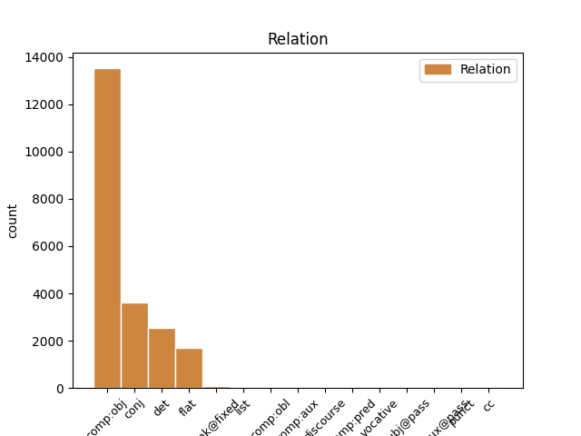
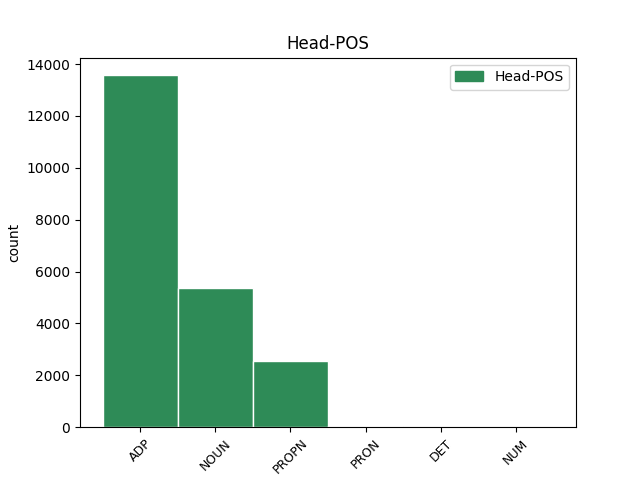
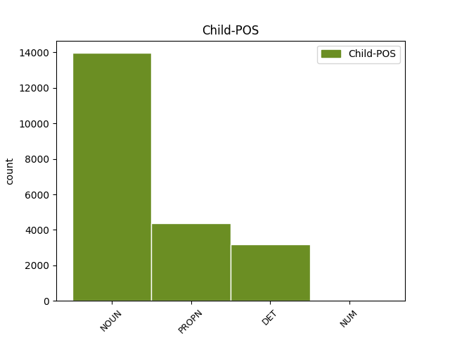

Distribution of features within this leaf



Agreement Rules sorted by frequency.
- When the dependent token is the direct object complements(comp:obj) of the head token, and the head token is ADP and the dependent token is NOUN.
1 Nakon nakon ADP Sg Case=Gen 0 _ _ _
2 odluke odluka NOUN Ncfsg Case=Gen|Gender=Fem|Number=Sing 1 comp:obj _ _
3 Europskog _ _ _ _ 0 _ _ _
4 suda _ _ _ _ 0 _ _ _
5 u _ _ _ _ 0 _ _ _
6 Strasbourgu _ _ _ _ 0 _ _ _
1 Inače _ _ _ _ 0 _ _ _
2 , _ _ _ _ 0 _ _ _
3 od _ _ _ _ 0 _ _ _
4 početka _ _ _ _ 0 _ _ _
5 re-emitiranja _ _ _ _ 0 _ _ _
6 serije _ _ _ _ 0 _ _ _
7 2002. _ _ _ _ 0 _ _ _
8 Top _ _ _ _ 0 _ _ _
9 Gear _ _ _ _ 0 _ _ _
10 je _ _ _ _ 0 _ _ _
11 imao _ _ _ _ 0 _ _ _
12 18 _ _ _ _ 0 _ _ _
13 sezona sezona NOUN Ncfpg Case=Gen|Gender=Fem|Number=Plur 0 _ _ _
14 i _ _ _ _ 0 _ _ _
15 147 _ _ _ _ 0 _ _ _
16 epizoda epizoda NOUN Ncfpg Case=Gen|Gender=Fem|Number=Plur 13 conj _ SpaceAfter=No
17 , _ _ _ _ 0 _ _ _
18 a _ _ _ _ 0 _ _ _
19 njihova _ _ _ _ 0 _ _ _
20 Facebook _ _ _ _ 0 _ _ _
21 stranica _ _ _ _ 0 _ _ _
22 trenutno _ _ _ _ 0 _ _ _
23 ima _ _ _ _ 0 _ _ _
24 12,1 _ _ _ _ 0 _ _ _
25 milijun _ _ _ _ 0 _ _ _
26 likeova _ _ _ _ 0 _ _ _
27 . _ _ _ _ 0 _ _ _
1 ( _ _ _ _ 0 _ _ _
2 3 _ _ _ _ 0 _ _ _
3 ) _ _ _ _ 0 _ _ _
4 Za _ _ _ _ 0 _ _ _
5 dio _ _ _ _ 0 _ _ _
6 građevinskog _ _ _ _ 0 _ _ _
7 područja _ _ _ _ 0 _ _ _
8 naselja _ _ _ _ 0 _ _ _
9 Novi _ _ _ _ 0 _ _ _
10 Vinodolski _ _ _ _ 0 _ _ _
11 NA1 _ _ _ _ 0 _ _ _
12 1 _ _ _ _ 0 _ _ _
13 - _ _ _ _ 0 _ _ _
14 registriranu _ _ _ _ 0 _ _ _
15 povijesnu _ _ _ _ 0 _ _ _
16 graditeljsku _ _ _ _ 0 _ _ _
17 cjelinu _ _ _ _ 0 _ _ _
18 , _ _ _ _ 0 _ _ _
19 moguća _ _ _ _ 0 _ _ _
20 su _ _ _ _ 0 _ _ _
21 odstupanja _ _ _ _ 0 _ _ _
22 od _ _ _ _ 0 _ _ _
23 zadanih _ _ _ _ 0 _ _ _
24 graničnih _ _ _ _ 0 _ _ _
25 vrijednosti _ _ _ _ 0 _ _ _
26 navedenih _ _ _ _ 0 _ _ _
27 u _ _ _ _ 0 _ _ _
28 člancima _ _ _ _ 0 _ _ _
29 27. _ _ _ _ 0 _ _ _
30 i _ _ _ _ 0 _ _ _
31 28. _ _ _ _ 0 _ _ _
32 Ovih ovaj DET Pd-fpg Case=Gen|Gender=Fem|Number=Plur|PronType=Dem 33 det _ _
33 Odredbi odredba NOUN Ncfpg Case=Gen|Gender=Fem|Number=Plur 0 _ _ _
34 ali _ _ _ _ 0 _ _ _
35 samo _ _ _ _ 0 _ _ _
36 u _ _ _ _ 0 _ _ _
37 smislu _ _ _ _ 0 _ _ _
38 uvjeta _ _ _ _ 0 _ _ _
39 određenih _ _ _ _ 0 _ _ _
40 od _ _ _ _ 0 _ _ _
41 nadležnog _ _ _ _ 0 _ _ _
42 Konzervatorskog _ _ _ _ 0 _ _ _
43 odjela _ _ _ _ 0 _ _ _
44 ( _ _ _ _ 0 _ _ _
45 označeno _ _ _ _ 0 _ _ _
46 kao _ _ _ _ 0 _ _ _
47 gradsko _ _ _ _ 0 _ _ _
48 naselje _ _ _ _ 0 _ _ _
49 - _ _ _ _ 0 _ _ _
50 zone _ _ _ _ 0 _ _ _
51 14 _ _ _ _ 0 _ _ _
52 A _ _ _ _ 0 _ _ _
53 i _ _ _ _ 0 _ _ _
54 14 _ _ _ _ 0 _ _ _
55 B _ _ _ _ 0 _ _ _
56 na _ _ _ _ 0 _ _ _
57 kartografskom _ _ _ _ 0 _ _ _
58 prikazu _ _ _ _ 0 _ _ _
59 br. _ _ _ _ 0 _ _ _
60 4.1. _ _ _ _ 0 _ _ _
61 » _ _ _ _ 0 _ _ _
62 Građevinska _ _ _ _ 0 _ _ _
63 područja _ _ _ _ 0 _ _ _
64 « _ _ _ _ 0 _ _ _
65 u _ _ _ _ 0 _ _ _
66 mjerilu _ _ _ _ 0 _ _ _
67 1:5000 _ _ _ _ 0 _ _ _
68 ) _ _ _ _ 0 _ _ _
69 . _ _ _ _ 0 _ _ _
1 Nakon _ _ _ _ 0 _ _ _
2 odluke _ _ _ _ 0 _ _ _
3 Europskog _ _ _ _ 0 _ _ _
4 suda _ _ _ _ 0 _ _ _
5 u u ADP Sl Case=Loc 0 _ _ _
6 Strasbourgu Strasbourg PROPN Npmsl Case=Loc|Gender=Masc|Number=Sing 5 comp:obj _ _
1 Kako _ _ _ _ 0 _ _ _
2 je _ _ _ _ 0 _ _ _
3 kazao _ _ _ _ 0 _ _ _
4 riječki _ _ _ _ 0 _ _ _
5 gradonačelnik _ _ _ _ 0 _ _ _
6 Vojko Vojko PROPN Npmsn Case=Nom|Gender=Masc|Number=Sing 0 _ _ _
7 Obersnel Obersnel PROPN Npmsn Case=Nom|Gender=Masc|Number=Sing 6 flat _ SpaceAfter=No
8 , _ _ _ _ 0 _ _ _
9 pokretanjem _ _ _ _ 0 _ _ _
10 studija _ _ _ _ 0 _ _ _
11 i _ _ _ _ 0 _ _ _
12 programa _ _ _ _ 0 _ _ _
13 cjeloživotnog _ _ _ _ 0 _ _ _
14 učenja _ _ _ _ 0 _ _ _
15 u _ _ _ _ 0 _ _ _
16 Rijeci _ _ _ _ 0 _ _ _
17 će _ _ _ _ 0 _ _ _
18 biti _ _ _ _ 0 _ _ _
19 zaokruženo _ _ _ _ 0 _ _ _
20 učenje _ _ _ _ 0 _ _ _
21 talijanskog _ _ _ _ 0 _ _ _
22 jezika _ _ _ _ 0 _ _ _
23 , _ _ _ _ 0 _ _ _
24 koje _ _ _ _ 0 _ _ _
25 sada _ _ _ _ 0 _ _ _
26 postoji _ _ _ _ 0 _ _ _
27 u _ _ _ _ 0 _ _ _
28 jaslicama _ _ _ _ 0 _ _ _
29 , _ _ _ _ 0 _ _ _
30 vrtićima _ _ _ _ 0 _ _ _
31 te _ _ _ _ 0 _ _ _
32 osnovnim _ _ _ _ 0 _ _ _
33 i _ _ _ _ 0 _ _ _
34 srednjim _ _ _ _ 0 _ _ _
35 školama _ _ _ _ 0 _ _ _
36 . _ _ _ _ 0 _ _ _
1 Kako _ _ _ _ 0 _ _ _
2 u _ _ _ _ 0 _ _ _
3 svom _ _ _ _ 0 _ _ _
4 priopćenju _ _ _ _ 0 _ _ _
5 napominju _ _ _ _ 0 _ _ _
6 iz _ _ _ _ 0 _ _ _
7 Spona _ _ _ _ 0 _ _ _
8 komunikacija _ _ _ _ 0 _ _ _
9 , _ _ _ _ 0 _ _ _
10 u _ _ _ _ 0 _ _ _
11 tekstu _ _ _ _ 0 _ _ _
12 se _ _ _ _ 0 _ _ _
13 navodi _ _ _ _ 0 _ _ _
14 da _ _ _ _ 0 _ _ _
15 su _ _ _ _ 0 _ _ _
16 Irska Irska PROPN Npfsn Case=Nom|Gender=Fem|Number=Sing 0 _ _ _
17 i _ _ _ _ 0 _ _ _
18 Poljska Poljska PROPN Npfsn Case=Nom|Gender=Fem|Number=Sing 16 conj _ _
19 jedne _ _ _ _ 0 _ _ _
20 od _ _ _ _ 0 _ _ _
21 rijetkih _ _ _ _ 0 _ _ _
22 zemalja _ _ _ _ 0 _ _ _
23 u _ _ _ _ 0 _ _ _
24 kojima _ _ _ _ 0 _ _ _
25 je _ _ _ _ 0 _ _ _
26 ova _ _ _ _ 0 _ _ _
27 pilula _ _ _ _ 0 _ _ _
28 posve _ _ _ _ 0 _ _ _
29 zabranjena _ _ _ _ 0 _ _ _
30 , _ _ _ _ 0 _ _ _
31 što _ _ _ _ 0 _ _ _
32 je _ _ _ _ 0 _ _ _
33 netočno _ _ _ _ 0 _ _ _
34 , _ _ _ _ 0 _ _ _
35 jer _ _ _ _ 0 _ _ _
36 je _ _ _ _ 0 _ _ _
37 pilula _ _ _ _ 0 _ _ _
38 indicirana _ _ _ _ 0 _ _ _
39 na _ _ _ _ 0 _ _ _
40 hitnu _ _ _ _ 0 _ _ _
41 kontracepciju _ _ _ _ 0 _ _ _
42 , _ _ _ _ 0 _ _ _
43 koja _ _ _ _ 0 _ _ _
44 sadrži _ _ _ _ 0 _ _ _
45 levonorgestrel _ _ _ _ 0 _ _ _
46 , _ _ _ _ 0 _ _ _
47 dostupna _ _ _ _ 0 _ _ _
48 u _ _ _ _ 0 _ _ _
49 obje _ _ _ _ 0 _ _ _
50 države _ _ _ _ 0 _ _ _
51 , _ _ _ _ 0 _ _ _
52 gdje _ _ _ _ 0 _ _ _
53 se _ _ _ _ 0 _ _ _
54 prodaje _ _ _ _ 0 _ _ _
55 u _ _ _ _ 0 _ _ _
56 ljekarnama _ _ _ _ 0 _ _ _
57 na _ _ _ _ 0 _ _ _
58 liječnički _ _ _ _ 0 _ _ _
59 recept _ _ _ _ 0 _ _ _
60 , _ _ _ _ 0 _ _ _
61 kao _ _ _ _ 0 _ _ _
62 što _ _ _ _ 0 _ _ _
63 je _ _ _ _ 0 _ _ _
64 to _ _ _ _ 0 _ _ _
65 od _ _ _ _ 0 _ _ _
66 danas _ _ _ _ 0 _ _ _
67 moguće _ _ _ _ 0 _ _ _
68 i _ _ _ _ 0 _ _ _
69 u _ _ _ _ 0 _ _ _
70 Hrvatskoj _ _ _ _ 0 _ _ _
71 . _ _ _ _ 0 _ _ _
1 Kako _ _ _ _ 0 _ _ _
2 u _ _ _ _ 0 _ _ _
3 svom _ _ _ _ 0 _ _ _
4 priopćenju _ _ _ _ 0 _ _ _
5 napominju _ _ _ _ 0 _ _ _
6 iz _ _ _ _ 0 _ _ _
7 Spona _ _ _ _ 0 _ _ _
8 komunikacija _ _ _ _ 0 _ _ _
9 , _ _ _ _ 0 _ _ _
10 u _ _ _ _ 0 _ _ _
11 tekstu _ _ _ _ 0 _ _ _
12 se _ _ _ _ 0 _ _ _
13 navodi _ _ _ _ 0 _ _ _
14 da _ _ _ _ 0 _ _ _
15 su _ _ _ _ 0 _ _ _
16 Irska _ _ _ _ 0 _ _ _
17 i _ _ _ _ 0 _ _ _
18 Poljska _ _ _ _ 0 _ _ _
19 jedne _ _ _ _ 0 _ _ _
20 od _ _ _ _ 0 _ _ _
21 rijetkih _ _ _ _ 0 _ _ _
22 zemalja _ _ _ _ 0 _ _ _
23 u u ADP Sl Case=Loc 0 _ _ _
24 kojima koji DET Pi-fpl Case=Loc|Gender=Fem|Number=Plur|PronType=Int,Rel 23 comp:obj _ _
25 je _ _ _ _ 0 _ _ _
26 ova _ _ _ _ 0 _ _ _
27 pilula _ _ _ _ 0 _ _ _
28 posve _ _ _ _ 0 _ _ _
29 zabranjena _ _ _ _ 0 _ _ _
30 , _ _ _ _ 0 _ _ _
31 što _ _ _ _ 0 _ _ _
32 je _ _ _ _ 0 _ _ _
33 netočno _ _ _ _ 0 _ _ _
34 , _ _ _ _ 0 _ _ _
35 jer _ _ _ _ 0 _ _ _
36 je _ _ _ _ 0 _ _ _
37 pilula _ _ _ _ 0 _ _ _
38 indicirana _ _ _ _ 0 _ _ _
39 na _ _ _ _ 0 _ _ _
40 hitnu _ _ _ _ 0 _ _ _
41 kontracepciju _ _ _ _ 0 _ _ _
42 , _ _ _ _ 0 _ _ _
43 koja _ _ _ _ 0 _ _ _
44 sadrži _ _ _ _ 0 _ _ _
45 levonorgestrel _ _ _ _ 0 _ _ _
46 , _ _ _ _ 0 _ _ _
47 dostupna _ _ _ _ 0 _ _ _
48 u _ _ _ _ 0 _ _ _
49 obje _ _ _ _ 0 _ _ _
50 države _ _ _ _ 0 _ _ _
51 , _ _ _ _ 0 _ _ _
52 gdje _ _ _ _ 0 _ _ _
53 se _ _ _ _ 0 _ _ _
54 prodaje _ _ _ _ 0 _ _ _
55 u _ _ _ _ 0 _ _ _
56 ljekarnama _ _ _ _ 0 _ _ _
57 na _ _ _ _ 0 _ _ _
58 liječnički _ _ _ _ 0 _ _ _
59 recept _ _ _ _ 0 _ _ _
60 , _ _ _ _ 0 _ _ _
61 kao _ _ _ _ 0 _ _ _
62 što _ _ _ _ 0 _ _ _
63 je _ _ _ _ 0 _ _ _
64 to _ _ _ _ 0 _ _ _
65 od _ _ _ _ 0 _ _ _
66 danas _ _ _ _ 0 _ _ _
67 moguće _ _ _ _ 0 _ _ _
68 i _ _ _ _ 0 _ _ _
69 u _ _ _ _ 0 _ _ _
70 Hrvatskoj _ _ _ _ 0 _ _ _
71 . _ _ _ _ 0 _ _ _
1 Ibrahim Ibrahim PROPN Npmsn Case=Nom|Gender=Masc|Number=Sing 0 _ _ _
2 Babić _ _ _ _ 0 _ _ _
3 i _ _ _ _ 0 _ _ _
4 njegova _ _ _ _ 0 _ _ _
5 obitelj obitelj NOUN Ncfsn Case=Nom|Gender=Fem|Number=Sing 1 conj _ _
6 ipak _ _ _ _ 0 _ _ _
7 nisu _ _ _ _ 0 _ _ _
8 deložirani _ _ _ _ 0 _ _ _
9 iz _ _ _ _ 0 _ _ _
10 stana _ _ _ _ 0 _ _ _
11 koji _ _ _ _ 0 _ _ _
12 im _ _ _ _ 0 _ _ _
13 je _ _ _ _ 0 _ _ _
14 na _ _ _ _ 0 _ _ _
15 privremeno _ _ _ _ 0 _ _ _
16 korištenje _ _ _ _ 0 _ _ _
17 dao _ _ _ _ 0 _ _ _
18 Grad _ _ _ _ 0 _ _ _
19 Zadar _ _ _ _ 0 _ _ _
20 još _ _ _ _ 0 _ _ _
21 1988. _ _ _ _ 0 _ _ _
22 godine _ _ _ _ 0 _ _ _
23 . _ _ _ _ 0 _ _ _
1 Čopor _ _ _ _ 0 _ _ _
2 Risnjak _ _ _ _ 0 _ _ _
3 glavninu _ _ _ _ 0 _ _ _
4 vremena _ _ _ _ 0 _ _ _
5 provodi _ _ _ _ 0 _ _ _
6 u _ _ _ _ 0 _ _ _
7 području _ _ _ _ 0 _ _ _
8 između _ _ _ _ 0 _ _ _
9 Crnog _ _ _ _ 0 _ _ _
10 Luga _ _ _ _ 0 _ _ _
11 , _ _ _ _ 0 _ _ _
12 Delnica _ _ _ _ 0 _ _ _
13 i _ _ _ _ 0 _ _ _
14 Lokvi _ _ _ _ 0 _ _ _
15 , _ _ _ _ 0 _ _ _
16 ali _ _ _ _ 0 _ _ _
17 zalazi _ _ _ _ 0 _ _ _
18 i _ _ _ _ 0 _ _ _
19 s _ _ _ _ 0 _ _ _
20 druge _ _ _ _ 0 _ _ _
21 strane _ _ _ _ 0 _ _ _
22 planine _ _ _ _ 0 _ _ _
23 Risnjak _ _ _ _ 0 _ _ _
24 - _ _ _ _ 0 _ _ _
25 do _ _ _ _ 0 _ _ _
26 livade livada NOUN Ncfsg Case=Gen|Gender=Fem|Number=Sing 0 _ _ _
27 Lazac _ _ _ _ 0 _ _ _
28 , _ _ _ _ 0 _ _ _
29 Vilja Vilj PROPN Npmsg Case=Gen|Gender=Masc|Number=Sing 26 conj _ SpaceAfter=No
30 , _ _ _ _ 0 _ _ _
31 Suhe _ _ _ _ 0 _ _ _
32 Rečine _ _ _ _ 0 _ _ _
33 i _ _ _ _ 0 _ _ _
34 Gornjeg _ _ _ _ 0 _ _ _
35 Jelenja _ _ _ _ 0 _ _ _
36 . _ _ _ _ 0 _ _ _
1 Za _ _ _ _ 0 _ _ _
2 specifične _ _ _ _ 0 _ _ _
3 savjete _ _ _ _ 0 _ _ _
4 i _ _ _ _ 0 _ _ _
5 upute _ _ _ _ 0 _ _ _
6 u u ADP Sl Case=Loc 0 _ _ _
7 svezi sveza NOUN Ncfsl Case=Loc|Gender=Fem|Number=Sing 6 unk@fixed _ _
8 s _ _ _ _ 0 _ _ _
9 proizvodima _ _ _ _ 0 _ _ _
10 i _ _ _ _ 0 _ _ _
11 uslugama _ _ _ _ 0 _ _ _
12 spomenutima _ _ _ _ 0 _ _ _
13 na _ _ _ _ 0 _ _ _
14 ovom _ _ _ _ 0 _ _ _
15 web _ _ _ _ 0 _ _ _
16 portalu _ _ _ _ 0 _ _ _
17 , _ _ _ _ 0 _ _ _
18 molimo _ _ _ _ 0 _ _ _
19 da _ _ _ _ 0 _ _ _
20 se _ _ _ _ 0 _ _ _
21 izravno _ _ _ _ 0 _ _ _
22 obratite _ _ _ _ 0 _ _ _
23 medicinskim _ _ _ _ 0 _ _ _
24 izvorima _ _ _ _ 0 _ _ _
25 , _ _ _ _ 0 _ _ _
26 liječničkom _ _ _ _ 0 _ _ _
27 i _ _ _ _ 0 _ _ _
28 ljekarničkom _ _ _ _ 0 _ _ _
29 osoblju _ _ _ _ 0 _ _ _
30 te _ _ _ _ 0 _ _ _
31 tijelima _ _ _ _ 0 _ _ _
32 koja _ _ _ _ 0 _ _ _
33 u _ _ _ _ 0 _ _ _
34 vašoj _ _ _ _ 0 _ _ _
35 zemlji _ _ _ _ 0 _ _ _
36 izdaju _ _ _ _ 0 _ _ _
37 rješenja _ _ _ _ 0 _ _ _
38 o _ _ _ _ 0 _ _ _
39 stavljanju _ _ _ _ 0 _ _ _
40 lijekova _ _ _ _ 0 _ _ _
41 i _ _ _ _ 0 _ _ _
42 medicinskih _ _ _ _ 0 _ _ _
43 pomagala _ _ _ _ 0 _ _ _
44 u _ _ _ _ 0 _ _ _
45 promet _ _ _ _ 0 _ _ _
46 . _ _ _ _ 0 _ _ _
1 Tekst _ _ _ _ 0 _ _ _
2 smo _ _ _ _ 0 _ _ _
3 skinuli _ _ _ _ 0 _ _ _
4 sa _ _ _ _ 0 _ _ _
5 stranica _ _ _ _ 0 _ _ _
6 BK _ _ _ _ 0 _ _ _
7 " _ _ _ _ 0 _ _ _
8 VG _ _ _ _ 0 _ _ _
9 " _ _ _ _ 0 _ _ _
10 , _ _ _ _ 0 _ _ _
11 jasno _ _ _ _ 0 _ _ _
12 i _ _ _ _ 0 _ _ _
13 uz _ _ _ _ 0 _ _ _
14 njihovu _ _ _ _ 0 _ _ _
15 dozvolu _ _ _ _ 0 _ _ _
16 , _ _ _ _ 0 _ _ _
17 a _ _ _ _ 0 _ _ _
18 tekst _ _ _ _ 0 _ _ _
19 su _ _ _ _ 0 _ _ _
20 napisali _ _ _ _ 0 _ _ _
21 roditelji _ _ _ _ 0 _ _ _
22 male _ _ _ _ 0 _ _ _
23 Nike _ _ _ _ 0 _ _ _
24 Kager _ _ _ _ 0 _ _ _
25 koja _ _ _ _ 0 _ _ _
26 ima _ _ _ _ 0 _ _ _
27 4 _ _ _ _ 0 _ _ _
28 i _ _ _ _ 0 _ _ _
29 pol _ _ _ _ 0 _ _ _
30 godine _ _ _ _ 0 _ _ _
31 , _ _ _ _ 0 _ _ _
32 i _ _ _ _ 0 _ _ _
33 koja _ _ _ _ 0 _ _ _
34 je _ _ _ _ 0 _ _ _
35 na _ _ _ _ 0 _ _ _
36 zadnjem _ _ _ _ 0 _ _ _
37 Plišanom _ _ _ _ 0 _ _ _
38 Medi medo NOUN Ncmsl Case=Loc|Gender=Masc|Number=Sing 0 _ _ _
39 Štedi Štedo PROPN Npmsl Case=Loc|Gender=Masc|Number=Sing 38 flat _ _
40 u _ _ _ _ 0 _ _ _
41 konkurenciji _ _ _ _ 0 _ _ _
42 do _ _ _ _ 0 _ _ _
43 9 _ _ _ _ 0 _ _ _
44 godina _ _ _ _ 0 _ _ _
45 osvojila _ _ _ _ 0 _ _ _
46 treće _ _ _ _ 0 _ _ _
47 mjesto _ _ _ _ 0 _ _ _
48 . _ _ _ _ 0 _ _ _
1 Prema _ _ _ _ 0 _ _ _
2 članovima _ _ _ _ 0 _ _ _
3 žirija _ _ _ _ 0 _ _ _
4 ( _ _ _ _ 0 _ _ _
5 Miljenko _ _ _ _ 0 _ _ _
6 Jergović _ _ _ _ 0 _ _ _
7 ( _ _ _ _ 0 _ _ _
8 predsjednik _ _ _ _ 0 _ _ _
9 žirija _ _ _ _ 0 _ _ _
10 ) _ _ _ _ 0 _ _ _
11 , _ _ _ _ 0 _ _ _
12 Strahimir _ _ _ _ 0 _ _ _
13 Primorac _ _ _ _ 0 _ _ _
14 , _ _ _ _ 0 _ _ _
15 Zoran _ _ _ _ 0 _ _ _
16 Ferić _ _ _ _ 0 _ _ _
17 , _ _ _ _ 0 _ _ _
18 Julijana _ _ _ _ 0 _ _ _
19 Matanović _ _ _ _ 0 _ _ _
20 i _ _ _ _ 0 _ _ _
21 Vladimir _ _ _ _ 0 _ _ _
22 Arsenijević _ _ _ _ 0 _ _ _
23 ) _ _ _ _ 0 _ _ _
24 , _ _ _ _ 0 _ _ _
25 Novakovićev _ _ _ _ 0 _ _ _
26 roman _ _ _ _ 0 _ _ _
27 Vođa _ _ _ _ 0 _ _ _
28 , _ _ _ _ 0 _ _ _
29 koji _ _ _ _ 0 _ _ _
30 opisuje _ _ _ _ 0 _ _ _
31 jedan _ _ _ _ 0 _ _ _
32 jedini _ _ _ _ 0 _ _ _
33 dan _ _ _ _ 0 _ _ _
34 , _ _ _ _ 0 _ _ _
35 Vidovdan _ _ _ _ 0 _ _ _
36 1914. _ _ _ _ 0 _ _ _
37 godine _ _ _ _ 0 _ _ _
38 , _ _ _ _ 0 _ _ _
39 a _ _ _ _ 0 _ _ _
40 tema _ _ _ _ 0 _ _ _
41 mu _ _ _ _ 0 _ _ _
42 je _ _ _ _ 0 _ _ _
43 kapetan _ _ _ _ 0 _ _ _
44 srpske _ _ _ _ 0 _ _ _
45 vojske _ _ _ _ 0 _ _ _
46 Stevan _ _ _ _ 0 _ _ _
47 Stamenković _ _ _ _ 0 _ _ _
48 koji _ _ _ _ 0 _ _ _
49 je _ _ _ _ 0 _ _ _
50 činio _ _ _ _ 0 _ _ _
51 velike _ _ _ _ 0 _ _ _
52 zločine _ _ _ _ 0 _ _ _
53 , _ _ _ _ 0 _ _ _
54 pokazao _ _ _ _ 0 _ _ _
55 se _ _ _ _ 0 _ _ _
56 kao _ _ _ _ 0 _ _ _
57 najbolji _ _ _ _ 0 _ _ _
58 u _ _ _ _ 0 _ _ _
59 konkurenciji _ _ _ _ 0 _ _ _
60 od _ _ _ _ 0 _ _ _
61 103 _ _ _ _ 0 _ _ _
62 rukopisa _ _ _ _ 0 _ _ _
63 od od ADP Sg Case=Gen 0 _ _ _
64 kojih koji DET Pi-mpg Case=Gen|Gender=Masc|Number=Plur|PronType=Int,Rel 63 unk@fixed _ _
65 je _ _ _ _ 0 _ _ _
66 13 _ _ _ _ 0 _ _ _
67 ušlo _ _ _ _ 0 _ _ _
68 u _ _ _ _ 0 _ _ _
69 uži _ _ _ _ 0 _ _ _
70 krug _ _ _ _ 0 _ _ _
71 . _ _ _ _ 0 _ _ _
1 Evo _ _ _ _ 0 _ _ _
2 neposredno _ _ _ _ 0 _ _ _
3 prije _ _ _ _ 0 _ _ _
4 misijske _ _ _ _ 0 _ _ _
5 nedjelje _ _ _ _ 0 _ _ _
6 , _ _ _ _ 0 _ _ _
7 vratila _ _ _ _ 0 _ _ _
8 se _ _ _ _ 0 _ _ _
9 i _ _ _ _ 0 _ _ _
10 naša naš DET Ps1fsn Case=Nom|Gender=Fem|Number=Sing|Number[psor]=Plur|Person=1|Poss=Yes|PronType=Prs 11 det _ _
11 Vlatka Vlatka PROPN Npfsn Case=Nom|Gender=Fem|Number=Sing 0 _ _ _
12 iz _ _ _ _ 0 _ _ _
13 Ekvadora _ _ _ _ 0 _ _ _
14 , _ _ _ _ 0 _ _ _
15 prepuna _ _ _ _ 0 _ _ _
16 izravnih _ _ _ _ 0 _ _ _
17 misijskih _ _ _ _ 0 _ _ _
18 dojmova _ _ _ _ 0 _ _ _
19 , _ _ _ _ 0 _ _ _
20 pa _ _ _ _ 0 _ _ _
21 pročitajmo _ _ _ _ 0 _ _ _
1 Ipak _ _ _ _ 0 _ _ _
2 , _ _ _ _ 0 _ _ _
3 najbolje _ _ _ _ 0 _ _ _
4 obrazovanje _ _ _ _ 0 _ _ _
5 je _ _ _ _ 0 _ _ _
6 ono on PRON Pp3nsn Case=Nom|Gender=Neut|Number=Sing|Person=3|PronType=Prs 0 _ _ _
7 koje _ _ _ _ 0 _ _ _
8 donosi _ _ _ _ 0 _ _ _
9 osobni _ _ _ _ 0 _ _ _
10 kontakt _ _ _ _ 0 _ _ _
11 i _ _ _ _ 0 _ _ _
12 interakcija interakcija NOUN Ncfsn Case=Nom|Gender=Fem|Number=Sing 6 conj _ SpaceAfter=No
13 , _ _ _ _ 0 _ _ _
14 do _ _ _ _ 0 _ _ _
15 koje _ _ _ _ 0 _ _ _
16 dolazi _ _ _ _ 0 _ _ _
17 u _ _ _ _ 0 _ _ _
18 okruženju _ _ _ _ 0 _ _ _
19 učionice _ _ _ _ 0 _ _ _
20 ili _ _ _ _ 0 _ _ _
21 treninga _ _ _ _ 0 _ _ _
22 na _ _ _ _ 0 _ _ _
23 radnom _ _ _ _ 0 _ _ _
24 mjestu _ _ _ _ 0 _ _ _
25 . _ _ _ _ 0 _ _ _
1 Odstupanje _ _ _ _ 0 _ _ _
2 od _ _ _ _ 0 _ _ _
3 gradiva _ _ _ _ 0 _ _ _
4 ispitnog _ _ _ _ 0 _ _ _
5 kataloga katalog NOUN Ncmsg Case=Gen|Gender=Masc|Number=Sing 0 _ _ _
6 i _ _ _ _ 0 _ _ _
7 onoga onaj DET Pd-msg Case=Gen|Gender=Masc|Number=Sing|PronType=Dem 5 conj _ _
8 koje _ _ _ _ 0 _ _ _
9 uopće _ _ _ _ 0 _ _ _
10 u _ _ _ _ 0 _ _ _
11 njemu _ _ _ _ 0 _ _ _
12 nije _ _ _ _ 0 _ _ _
13 navedeno _ _ _ _ 0 _ _ _
14 , _ _ _ _ 0 _ _ _
15 smatra _ _ _ _ 0 _ _ _
16 se _ _ _ _ 0 _ _ _
17 prekršajnim _ _ _ _ 0 _ _ _
18 i _ _ _ _ 0 _ _ _
19 kaznenim _ _ _ _ 0 _ _ _
20 djelom _ _ _ _ 0 _ _ _
21 . _ _ _ _ 0 _ _ _
1 Moram _ _ _ _ 0 _ _ _
2 priznati _ _ _ _ 0 _ _ _
3 da _ _ _ _ 0 _ _ _
4 smo _ _ _ _ 0 _ _ _
5 došli _ _ _ _ 0 _ _ _
6 po _ _ _ _ 0 _ _ _
7 tri _ _ _ _ 0 _ _ _
8 boda _ _ _ _ 0 _ _ _
9 , _ _ _ _ 0 _ _ _
10 na _ _ _ _ 0 _ _ _
11 kraju _ _ _ _ 0 _ _ _
12 smo _ _ _ _ 0 _ _ _
13 zadovoljni _ _ _ _ 0 _ _ _
14 s sa ADP Si Case=Ins 0 _ _ _
15 jednim jedan NUM Mlcmsi Case=Ins|Gender=Masc|Number=Sing|NumType=Card 14 comp:obj _ SpaceAfter=No
16 . _ _ _ _ 0 _ _ _
1 Svake _ _ _ _ 0 _ _ _
2 večeri _ _ _ _ 0 _ _ _
3 bile _ _ _ _ 0 _ _ _
4 su _ _ _ _ 0 _ _ _
5 organizirane _ _ _ _ 0 _ _ _
6 različite _ _ _ _ 0 _ _ _
7 zabave _ _ _ _ 0 _ _ _
8 i _ _ _ _ 0 _ _ _
9 natjecanja _ _ _ _ 0 _ _ _
10 : _ _ _ _ 0 _ _ _
11 Disco _ _ _ _ 0 _ _ _
12 party _ _ _ _ 0 _ _ _
13 , _ _ _ _ 0 _ _ _
14 Pidžama pidžama NOUN Ncfsn Case=Nom|Gender=Fem|Number=Sing 0 _ _ _
15 party party NOUN Ncmsn Case=Nom|Gender=Masc|Number=Sing 14 flat _ SpaceAfter=No
16 , _ _ _ _ 0 _ _ _
17 Lude _ _ _ _ 0 _ _ _
18 frizure _ _ _ _ 0 _ _ _
19 , _ _ _ _ 0 _ _ _
20 Pokaži _ _ _ _ 0 _ _ _
21 što _ _ _ _ 0 _ _ _
22 znaš _ _ _ _ 0 _ _ _
23 i _ _ _ _ 0 _ _ _
24 sl. _ _ _ _ 0 _ _ _
1 Možete _ _ _ _ 0 _ _ _
2 li _ _ _ _ 0 _ _ _
3 ukratko _ _ _ _ 0 _ _ _
4 predstaviti _ _ _ _ 0 _ _ _
5 CugIN Cugin PROPN Npmsan Animacy=Inan|Case=Acc|Gender=Masc|Number=Sing 0 _ _ _
6 aplikaciju aplikacija NOUN Ncfsa Case=Acc|Gender=Fem|Number=Sing 5 flat _ SpaceAfter=No
7 ? _ _ _ _ 0 _ _ _
1 Takvo _ _ _ _ 0 _ _ _
2 ponašanje _ _ _ _ 0 _ _ _
3 drže _ _ _ _ 0 _ _ _
4 neprimjerenim _ _ _ _ 0 _ _ _
5 poslovnim _ _ _ _ 0 _ _ _
6 običajima _ _ _ _ 0 _ _ _
7 u _ _ _ _ 0 _ _ _
8 međunarodnim _ _ _ _ 0 _ _ _
9 financijskim _ _ _ _ 0 _ _ _
10 odnosima _ _ _ _ 0 _ _ _
11 , _ _ _ _ 0 _ _ _
12 a _ _ _ _ 0 _ _ _
13 posebno _ _ _ _ 0 _ _ _
14 u _ _ _ _ 0 _ _ _
15 svjetlu _ _ _ _ 0 _ _ _
16 nedavnih _ _ _ _ 0 _ _ _
17 umjetno _ _ _ _ 0 _ _ _
18 stvorenih _ _ _ _ 0 _ _ _
19 napetih _ _ _ _ 0 _ _ _
20 odnosa _ _ _ _ 0 _ _ _
21 između između ADP Sg Case=Gen 0 _ _ _
22 Bayerische _ _ _ _ 0 _ _ _
23 Landesbank _ _ _ _ 0 _ _ _
24 i _ _ _ _ 0 _ _ _
25 Hrvatske _ _ _ _ 0 _ _ _
26 narodne _ _ _ _ 0 _ _ _
27 banke banka NOUN Ncfsg Case=Gen|Gender=Fem|Number=Sing 21 conj _ _
28 u _ _ _ _ 0 _ _ _
29 vrijeme _ _ _ _ 0 _ _ _
30 kada _ _ _ _ 0 _ _ _
31 je _ _ _ _ 0 _ _ _
32 Bayerische _ _ _ _ 0 _ _ _
33 Landesbank _ _ _ _ 0 _ _ _
34 stjecala _ _ _ _ 0 _ _ _
35 većinski _ _ _ _ 0 _ _ _
36 vlasnički _ _ _ _ 0 _ _ _
37 udio _ _ _ _ 0 _ _ _
38 u _ _ _ _ 0 _ _ _
39 Hypo _ _ _ _ 0 _ _ _
40 Alpe _ _ _ _ 0 _ _ _
41 Adria _ _ _ _ 0 _ _ _
42 banci _ _ _ _ 0 _ _ _
43 . _ _ _ _ 0 _ _ _
1 Podnesena _ _ _ _ 0 _ _ _
2 je _ _ _ _ 0 _ _ _
3 anonimna _ _ _ _ 0 _ _ _
4 prijava _ _ _ _ 0 _ _ _
5 USKOK-u _ _ _ _ 0 _ _ _
6 , _ _ _ _ 0 _ _ _
7 pa _ _ _ _ 0 _ _ _
8 se _ _ _ _ 0 _ _ _
9 nadamo _ _ _ _ 0 _ _ _
10 da _ _ _ _ 0 _ _ _
11 će _ _ _ _ 0 _ _ _
12 USKOK _ _ _ _ 0 _ _ _
13 otkriti _ _ _ _ 0 _ _ _
14 što _ _ _ _ 0 _ _ _
15 to taj DET Pd-nsa Case=Acc|Gender=Neut|Number=Sing|PronType=Dem 16 det _ _
16 sve sve DET Pi-nsa Case=Acc|Gender=Neut|Number=Sing|PronType=Tot 0 _ _ _
17 skriva _ _ _ _ 0 _ _ _
18 poslovna _ _ _ _ 0 _ _ _
19 tajna _ _ _ _ 0 _ _ _
20 . _ _ _ _ 0 _ _ _
1 Gostima _ _ _ _ 0 _ _ _
2 je _ _ _ _ 0 _ _ _
3 na _ _ _ _ 0 _ _ _
4 raspolaganju _ _ _ _ 0 _ _ _
5 : _ _ _ _ 0 _ _ _
6 perilica perilica NOUN Ncfsn Case=Nom|Gender=Fem|Number=Sing 0 _ _ _
7 posuđa _ _ _ _ 0 _ _ _
8 , _ _ _ _ 0 _ _ _
9 toster _ _ _ _ 0 _ _ _
10 , _ _ _ _ 0 _ _ _
11 mikrovalna _ _ _ _ 0 _ _ _
12 pećnica _ _ _ _ 0 _ _ _
13 , _ _ _ _ 0 _ _ _
14 pegla _ _ _ _ 0 _ _ _
15 i _ _ _ _ 0 _ _ _
16 daska _ _ _ _ 0 _ _ _
17 za _ _ _ _ 0 _ _ _
18 peglanje _ _ _ _ 0 _ _ _
19 , _ _ _ _ 0 _ _ _
20 Internet _ _ _ _ 0 _ _ _
21 priključak priključak NOUN Ncmsn Case=Nom|Gender=Masc|Number=Sing 6 list _ SpaceAfter=No
22 . _ _ _ _ 0 _ _ _
1 Uvijek _ _ _ _ 0 _ _ _
2 se _ _ _ _ 0 _ _ _
3 je _ _ _ _ 0 _ _ _
4 skrivao _ _ _ _ 0 _ _ _
5 iza _ _ _ _ 0 _ _ _
6 svojih _ _ _ _ 0 _ _ _
7 najbližih _ _ _ _ 0 _ _ _
8 suradnika _ _ _ _ 0 _ _ _
9 , _ _ _ _ 0 _ _ _
10 dobro _ _ _ _ 0 _ _ _
11 pazeći _ _ _ _ 0 _ _ _
12 da _ _ _ _ 0 _ _ _
13 ni _ _ _ _ 0 _ _ _
14 u _ _ _ _ 0 _ _ _
15 jednome _ _ _ _ 0 _ _ _
16 trenutku _ _ _ _ 0 _ _ _
17 ne _ _ _ _ 0 _ _ _
18 izazove izazov NOUN Ncmpa Case=Acc|Gender=Masc|Number=Plur 0 _ _ _
19 bijes bijes NOUN Ncmsan Animacy=Inan|Case=Acc|Gender=Masc|Number=Sing 18 comp:obj _ _
20 glavnih _ _ _ _ 0 _ _ _
21 Grupo _ _ _ _ 0 _ _ _
22 igrača _ _ _ _ 0 _ _ _
23 ? _ _ _ _ 0 _ _ _
1 Visoki _ _ _ _ 0 _ _ _
2 predstavnik _ _ _ _ 0 _ _ _
3 , _ _ _ _ 0 _ _ _
4 najviši _ _ _ _ 0 _ _ _
5 izaslanik _ _ _ _ 0 _ _ _
6 međunarodne _ _ _ _ 0 _ _ _
7 zajednice _ _ _ _ 0 _ _ _
8 u u ADP Sl Case=Loc 0 _ _ _
9 zemlji zemlja NOUN Ncfsl Case=Loc|Gender=Fem|Number=Sing 8 comp:aux _ SpaceAfter=No
10 , _ _ _ _ 0 _ _ _
11 ima _ _ _ _ 0 _ _ _
12 široke _ _ _ _ 0 _ _ _
13 ovlasti _ _ _ _ 0 _ _ _
14 koje _ _ _ _ 0 _ _ _
15 mu _ _ _ _ 0 _ _ _
16 omogućavaju _ _ _ _ 0 _ _ _
17 nametanje _ _ _ _ 0 _ _ _
18 odluka _ _ _ _ 0 _ _ _
19 i _ _ _ _ 0 _ _ _
20 zakona _ _ _ _ 0 _ _ _
21 . _ _ _ _ 0 _ _ _
1 Ja _ _ _ _ 0 _ _ _
2 sam _ _ _ _ 0 _ _ _
3 počeo _ _ _ _ 0 _ _ _
4 svirati _ _ _ _ 0 _ _ _
5 violinu _ _ _ _ 0 _ _ _
6 na _ _ _ _ 0 _ _ _
7 početku _ _ _ _ 0 _ _ _
8 samo _ _ _ _ 0 _ _ _
9 za _ _ _ _ 0 _ _ _
10 tri _ _ _ _ 0 _ _ _
11 pjesme _ _ _ _ 0 _ _ _
12 , _ _ _ _ 0 _ _ _
13 ali _ _ _ _ 0 _ _ _
14 onda _ _ _ _ 0 _ _ _
15 sam _ _ _ _ 0 _ _ _
16 ostao _ _ _ _ 0 _ _ _
17 samo _ _ _ _ 0 _ _ _
18 ja ja PRON Pp1-sn Case=Nom|Number=Sing|Person=1|PronType=Prs 0 _ _ _
19 i _ _ _ _ 0 _ _ _
20 Tom Tom PROPN Npmsn Case=Nom|Gender=Masc|Number=Sing 18 conj _ SpaceAfter=No
21 , _ _ _ _ 0 _ _ _
22 svi _ _ _ _ 0 _ _ _
23 ostali _ _ _ _ 0 _ _ _
24 su _ _ _ _ 0 _ _ _
25 otišli _ _ _ _ 0 _ _ _
26 iz _ _ _ _ 0 _ _ _
27 benda _ _ _ _ 0 _ _ _
28 . _ _ _ _ 0 _ _ _
1 Optužbe _ _ _ _ 0 _ _ _
2 su _ _ _ _ 0 _ _ _
3 ne _ _ _ _ 0 _ _ _
4 samo _ _ _ _ 0 _ _ _
5 neutemeljene _ _ _ _ 0 _ _ _
6 , _ _ _ _ 0 _ _ _
7 već _ _ _ _ 0 _ _ _
8 i _ _ _ _ 0 _ _ _
9 potpuno _ _ _ _ 0 _ _ _
10 apsurdne _ _ _ _ 0 _ _ _
11 te _ _ _ _ 0 _ _ _
12 sam _ _ _ _ 0 _ _ _
13 jako _ _ _ _ 0 _ _ _
14 razočarana _ _ _ _ 0 _ _ _
15 što _ _ _ _ 0 _ _ _
16 se _ _ _ _ 0 _ _ _
17 ja _ _ _ _ 0 _ _ _
18 kao _ _ _ _ 0 _ _ _
19 i _ _ _ _ 0 _ _ _
20 moj _ _ _ _ 0 _ _ _
21 izdavač _ _ _ _ 0 _ _ _
22 , _ _ _ _ 0 _ _ _
23 Bloomsbury _ _ _ _ 0 _ _ _
24 Publishing _ _ _ _ 0 _ _ _
25 , _ _ _ _ 0 _ _ _
26 moramo _ _ _ _ 0 _ _ _
27 suočiti _ _ _ _ 0 _ _ _
28 s _ _ _ _ 0 _ _ _
29 optužbama _ _ _ _ 0 _ _ _
30 i _ _ _ _ 0 _ _ _
31 što _ _ _ _ 0 _ _ _
32 smo _ _ _ _ 0 _ _ _
33 se _ _ _ _ 0 _ _ _
34 našli _ _ _ _ 0 _ _ _
35 u _ _ _ _ 0 _ _ _
36 situaciji _ _ _ _ 0 _ _ _
37 da _ _ _ _ 0 _ _ _
38 se _ _ _ _ 0 _ _ _
39 branimo _ _ _ _ 0 _ _ _
40 od _ _ _ _ 0 _ _ _
41 nečeg nešto PRON Pi3n-g Case=Gen|Gender=Neut|PronType=Ind 0 _ _ _
42 ovakvog ovakav DET Agpnsgy Case=Gen|Definite=Def|Degree=Pos|Gender=Neut|Number=Sing 41 det _ SpaceAfter=No
43 . _ _ _ _ 0 _ _ _
1 Na _ _ _ _ 0 _ _ _
2 kraju _ _ _ _ 0 _ _ _
3 je _ _ _ _ 0 _ _ _
4 popis _ _ _ _ 0 _ _ _
5 onih onaj DET Pd-mpg Case=Gen|Gender=Masc|Number=Plur|PronType=Dem 0 _ _ _
6 koji _ _ _ _ 0 _ _ _
7 su _ _ _ _ 0 _ _ _
8 dobili _ _ _ _ 0 _ _ _
9 novac _ _ _ _ 0 _ _ _
10 , _ _ _ _ 0 _ _ _
11 njih _ _ _ _ 0 _ _ _
12 426 _ _ _ _ 0 _ _ _
13 , _ _ _ _ 0 _ _ _
14 i _ _ _ _ 0 _ _ _
15 onih onaj DET Pd-mpg Case=Gen|Gender=Masc|Number=Plur|PronType=Dem 5 conj _ _
16 koji _ _ _ _ 0 _ _ _
17 tvrde _ _ _ _ 0 _ _ _
18 da _ _ _ _ 0 _ _ _
19 su _ _ _ _ 0 _ _ _
20 oštećeni _ _ _ _ 0 _ _ _
21 , _ _ _ _ 0 _ _ _
22 njih _ _ _ _ 0 _ _ _
23 40 _ _ _ _ 0 _ _ _
24 , _ _ _ _ 0 _ _ _
25 predao _ _ _ _ 0 _ _ _
26 županu _ _ _ _ 0 _ _ _
27 Jurkoviću _ _ _ _ 0 _ _ _
28 i _ _ _ _ 0 _ _ _
29 institucijama _ _ _ _ 0 _ _ _
30 koje _ _ _ _ 0 _ _ _
31 bi _ _ _ _ 0 _ _ _
32 trebale _ _ _ _ 0 _ _ _
33 interesirati _ _ _ _ 0 _ _ _
34 eventualne _ _ _ _ 0 _ _ _
35 nepravilnosti _ _ _ _ 0 _ _ _
36 . _ _ _ _ 0 _ _ _
1 Dakle _ _ _ _ 0 _ _ _
2 , _ _ _ _ 0 _ _ _
3 slično _ _ _ _ 0 _ _ _
4 kao _ _ _ _ 0 _ _ _
5 u _ _ _ _ 0 _ _ _
6 Amsterdamu _ _ _ _ 0 _ _ _
7 , _ _ _ _ 0 _ _ _
8 kada _ _ _ _ 0 _ _ _
9 su _ _ _ _ 0 _ _ _
10 Mandžukić _ _ _ _ 0 _ _ _
11 i _ _ _ _ 0 _ _ _
12 Tadić _ _ _ _ 0 _ _ _
13 , _ _ _ _ 0 _ _ _
14 poslije _ _ _ _ 0 _ _ _
15 i _ _ _ _ 0 _ _ _
16 Mikić _ _ _ _ 0 _ _ _
17 pritiskali _ _ _ _ 0 _ _ _
18 i _ _ _ _ 0 _ _ _
19 izbezumili _ _ _ _ 0 _ _ _
20 Stama _ _ _ _ 0 _ _ _
21 i _ _ _ _ 0 _ _ _
22 Van van PROPN Npmsay Animacy=Anim|Case=Acc|Gender=Masc|Number=Sing 0 _ _ _
23 der _ _ _ _ 0 _ _ _
24 Wiela Wiel PROPN Npmsay Animacy=Anim|Case=Acc|Gender=Masc|Number=Sing 22 comp:obj _ SpaceAfter=No
25 . _ _ _ _ 0 _ _ _
1 Dakle _ _ _ _ 0 _ _ _
2 , _ _ _ _ 0 _ _ _
3 slično _ _ _ _ 0 _ _ _
4 kao _ _ _ _ 0 _ _ _
5 u _ _ _ _ 0 _ _ _
6 Amsterdamu _ _ _ _ 0 _ _ _
7 , _ _ _ _ 0 _ _ _
8 kada _ _ _ _ 0 _ _ _
9 su _ _ _ _ 0 _ _ _
10 Mandžukić _ _ _ _ 0 _ _ _
11 i _ _ _ _ 0 _ _ _
12 Tadić _ _ _ _ 0 _ _ _
13 , _ _ _ _ 0 _ _ _
14 poslije _ _ _ _ 0 _ _ _
15 i _ _ _ _ 0 _ _ _
16 Mikić _ _ _ _ 0 _ _ _
17 pritiskali _ _ _ _ 0 _ _ _
18 i _ _ _ _ 0 _ _ _
19 izbezumili _ _ _ _ 0 _ _ _
20 Stama _ _ _ _ 0 _ _ _
21 i _ _ _ _ 0 _ _ _
22 Van _ _ _ _ 0 _ _ _
23 der der PROPN Npmsay Animacy=Anim|Case=Acc|Gender=Masc|Number=Sing 24 det _ _
24 Wiela Wiel PROPN Npmsay Animacy=Anim|Case=Acc|Gender=Masc|Number=Sing 0 _ _ _
25 . _ _ _ _ 0 _ _ _
1 Hrvatski _ _ _ _ 0 _ _ _
2 geolozi _ _ _ _ 0 _ _ _
3 , _ _ _ _ 0 _ _ _
4 zajedno _ _ _ _ 0 _ _ _
5 s _ _ _ _ 0 _ _ _
6 kolegama _ _ _ _ 0 _ _ _
7 iz iz ADP Sg Case=Gen 0 _ _ _
8 Sjedinjenih _ _ _ _ 0 _ _ _
9 Američkih _ _ _ _ 0 _ _ _
10 Država _ _ _ _ 0 _ _ _
11 , _ _ _ _ 0 _ _ _
12 Italije Italija PROPN Npfsg Case=Gen|Gender=Fem|Number=Sing 7 conj _ _
13 i _ _ _ _ 0 _ _ _
14 Velike _ _ _ _ 0 _ _ _
15 Britanije _ _ _ _ 0 _ _ _
16 , _ _ _ _ 0 _ _ _
17 otkrili _ _ _ _ 0 _ _ _
18 su _ _ _ _ 0 _ _ _
19 kako _ _ _ _ 0 _ _ _
20 se _ _ _ _ 0 _ _ _
21 Hrvatska _ _ _ _ 0 _ _ _
22 približava _ _ _ _ 0 _ _ _
23 Italiji _ _ _ _ 0 _ _ _
24 za _ _ _ _ 0 _ _ _
25 4 _ _ _ _ 0 _ _ _
26 milimetra _ _ _ _ 0 _ _ _
27 godišnje _ _ _ _ 0 _ _ _
28 . _ _ _ _ 0 _ _ _
1 Ostale _ _ _ _ 0 _ _ _
2 tranzicijske _ _ _ _ 0 _ _ _
3 zemlje _ _ _ _ 0 _ _ _
4 su _ _ _ _ 0 _ _ _
5 između _ _ _ _ 0 _ _ _
6 Hrvatske _ _ _ _ 0 _ _ _
7 i _ _ _ _ 0 _ _ _
8 ovih ovaj DET Pd-fpg Case=Gen|Gender=Fem|Number=Plur|PronType=Dem 9 det _ _
9 dviju dva NUM Mlcf-g Case=Gen|Gender=Fem|Number=Plur|NumType=Card 0 _ _ _
10 s _ _ _ _ 0 _ _ _
11 najvećim _ _ _ _ 0 _ _ _
12 udjelom _ _ _ _ 0 _ _ _
13 . _ _ _ _ 0 _ _ _
1 Mi _ _ _ _ 0 _ _ _
2 kao _ _ _ _ 0 _ _ _
3 , _ _ _ _ 0 _ _ _
4 trenutno _ _ _ _ 0 _ _ _
5 grupa _ _ _ _ 0 _ _ _
6 , _ _ _ _ 0 _ _ _
7 a _ _ _ _ 0 _ _ _
8 u _ _ _ _ 0 _ _ _
9 budućnosti _ _ _ _ 0 _ _ _
10 i _ _ _ _ 0 _ _ _
11 udruga _ _ _ _ 0 _ _ _
12 ne _ _ _ _ 0 _ _ _
13 samo _ _ _ _ 0 _ _ _
14 da _ _ _ _ 0 _ _ _
15 smatramo _ _ _ _ 0 _ _ _
16 da _ _ _ _ 0 _ _ _
17 je _ _ _ _ 0 _ _ _
18 potrebno _ _ _ _ 0 _ _ _
19 objelodaniti _ _ _ _ 0 _ _ _
20 registar _ _ _ _ 0 _ _ _
21 već _ _ _ _ 0 _ _ _
22 i _ _ _ _ 0 _ _ _
23 sankcionirati _ _ _ _ 0 _ _ _
24 one onaj DET Pd-mpa Case=Acc|Gender=Masc|Number=Plur|PronType=Dem 0 _ _ _
25 koji _ _ _ _ 0 _ _ _
26 su _ _ _ _ 0 _ _ _
27 na _ _ _ _ 0 _ _ _
28 neprimjeren _ _ _ _ 0 _ _ _
29 način _ _ _ _ 0 _ _ _
30 stekli _ _ _ _ 0 _ _ _
31 benificije _ _ _ _ 0 _ _ _
32 , _ _ _ _ 0 _ _ _
33 statusa _ _ _ _ 0 _ _ _
34 branitelja _ _ _ _ 0 _ _ _
35 , _ _ _ _ 0 _ _ _
36 HRVI-a _ _ _ _ 0 _ _ _
37 te _ _ _ _ 0 _ _ _
38 ' _ _ _ _ 0 _ _ _
39 kupovanje kupovanje NOUN Ncnsa Case=Acc|Gender=Neut|Number=Sing 24 conj _ SpaceAfter=No
40 ' _ _ _ _ 0 _ _ _
41 ratnih _ _ _ _ 0 _ _ _
42 puteva _ _ _ _ 0 _ _ _
43 . _ _ _ _ 0 _ _ _
1 Šume _ _ _ _ 0 _ _ _
2 u _ _ _ _ 0 _ _ _
3 okolici _ _ _ _ 0 _ _ _
4 Dvigrada _ _ _ _ 0 _ _ _
5 , _ _ _ _ 0 _ _ _
6 Pazina _ _ _ _ 0 _ _ _
7 i _ _ _ _ 0 _ _ _
8 Motovuna _ _ _ _ 0 _ _ _
9 bogate _ _ _ _ 0 _ _ _
10 su _ _ _ _ 0 _ _ _
11 velikim _ _ _ _ 0 _ _ _
12 kaćunom _ _ _ _ 0 _ _ _
13 ( _ _ _ _ 0 _ _ _
14 Orchis _ _ _ _ 0 _ _ _
15 militaris _ _ _ _ 0 _ _ _
16 ) _ _ _ _ 0 _ _ _
17 , _ _ _ _ 0 _ _ _
18 dok _ _ _ _ 0 _ _ _
19 u _ _ _ _ 0 _ _ _
20 motovunskoj _ _ _ _ 0 _ _ _
21 šumi _ _ _ _ 0 _ _ _
22 rastu _ _ _ _ 0 _ _ _
23 poznati _ _ _ _ 0 _ _ _
24 i _ _ _ _ 0 _ _ _
25 cijenjeni _ _ _ _ 0 _ _ _
26 tartufi _ _ _ _ 0 _ _ _
27 , _ _ _ _ 0 _ _ _
28 a _ _ _ _ 0 _ _ _
29 prevladava _ _ _ _ 0 _ _ _
30 hrast hrast NOUN Ncmsn Case=Nom|Gender=Masc|Number=Sing 0 _ _ _
31 lužnjak lužnjak NOUN Ncmsn Case=Nom|Gender=Masc|Number=Sing 30 unk@fixed _ _
32 ( _ _ _ _ 0 _ _ _
33 Quercus _ _ _ _ 0 _ _ _
34 robur _ _ _ _ 0 _ _ _
35 ) _ _ _ _ 0 _ _ _
36 , _ _ _ _ 0 _ _ _
37 brijest _ _ _ _ 0 _ _ _
38 ( _ _ _ _ 0 _ _ _
39 Ulmus _ _ _ _ 0 _ _ _
40 campestris _ _ _ _ 0 _ _ _
41 ) _ _ _ _ 0 _ _ _
42 i _ _ _ _ 0 _ _ _
43 jasen _ _ _ _ 0 _ _ _
44 ( _ _ _ _ 0 _ _ _
45 Fraxinus _ _ _ _ 0 _ _ _
46 ornus _ _ _ _ 0 _ _ _
47 ) _ _ _ _ 0 _ _ _
48 . _ _ _ _ 0 _ _ _
1 Gospodine gospodin NOUN Ncmsv Case=Voc|Gender=Masc|Number=Sing 0 _ _ _
2 gradonačelniče gradonačelnik NOUN Ncmsv Case=Voc|Gender=Masc|Number=Sing 1 vocative _ SpaceAfter=No
3 , _ _ _ _ 0 _ _ _
4 podsjećamo _ _ _ _ 0 _ _ _
5 Vas _ _ _ _ 0 _ _ _
6 da _ _ _ _ 0 _ _ _
7 se _ _ _ _ 0 _ _ _
8 je _ _ _ _ 0 _ _ _
9 , _ _ _ _ 0 _ _ _
10 dok _ _ _ _ 0 _ _ _
11 Vi _ _ _ _ 0 _ _ _
12 dijelite _ _ _ _ 0 _ _ _
13 ruže _ _ _ _ 0 _ _ _
14 , _ _ _ _ 0 _ _ _
15 nevažno _ _ _ _ 0 _ _ _
16 plaćene _ _ _ _ 0 _ _ _
17 čijim _ _ _ _ 0 _ _ _
18 novcem _ _ _ _ 0 _ _ _
19 , _ _ _ _ 0 _ _ _
20 jedino _ _ _ _ 0 _ _ _
21 gradsko _ _ _ _ 0 _ _ _
22 sklonište _ _ _ _ 0 _ _ _
23 za _ _ _ _ 0 _ _ _
24 pretučene _ _ _ _ 0 _ _ _
25 žene _ _ _ _ 0 _ _ _
26 našlo _ _ _ _ 0 _ _ _
27 pred _ _ _ _ 0 _ _ _
28 zatvaranjem _ _ _ _ 0 _ _ _
29 , _ _ _ _ 0 _ _ _
30 jer _ _ _ _ 0 _ _ _
31 Vi _ _ _ _ 0 _ _ _
32 niste _ _ _ _ 0 _ _ _
33 bili _ _ _ _ 0 _ _ _
34 u _ _ _ _ 0 _ _ _
35 stanju _ _ _ _ 0 _ _ _
36 izdvojiti _ _ _ _ 0 _ _ _
37 otprilike _ _ _ _ 0 _ _ _
38 istu _ _ _ _ 0 _ _ _
39 sumu _ _ _ _ 0 _ _ _
40 koju _ _ _ _ 0 _ _ _
41 ste _ _ _ _ 0 _ _ _
42 dali _ _ _ _ 0 _ _ _
43 za _ _ _ _ 0 _ _ _
44 te _ _ _ _ 0 _ _ _
45 ruže _ _ _ _ 0 _ _ _
46 i _ _ _ _ 0 _ _ _
47 kavice _ _ _ _ 0 _ _ _
48 s _ _ _ _ 0 _ _ _
49 gradonačelnikom _ _ _ _ 0 _ _ _
50 . _ _ _ _ 0 _ _ _
1 Jedanaest _ _ _ _ 0 _ _ _
2 mjeseci _ _ _ _ 0 _ _ _
3 nakon _ _ _ _ 0 _ _ _
4 što _ _ _ _ 0 _ _ _
5 je _ _ _ _ 0 _ _ _
6 hrvatska _ _ _ _ 0 _ _ _
7 zrakoplovna _ _ _ _ 0 _ _ _
8 kompanija _ _ _ _ 0 _ _ _
9 Croatia _ _ _ _ 0 _ _ _
10 Airlines _ _ _ _ 0 _ _ _
11 , _ _ _ _ 0 _ _ _
12 zbog _ _ _ _ 0 _ _ _
13 racionalizacije _ _ _ _ 0 _ _ _
14 poslovanja _ _ _ _ 0 _ _ _
15 , _ _ _ _ 0 _ _ _
16 ukinula _ _ _ _ 0 _ _ _
17 sezonsku _ _ _ _ 0 _ _ _
18 avionsku _ _ _ _ 0 _ _ _
19 liniju _ _ _ _ 0 _ _ _
20 Zagreb Zagreb PROPN Npmsn Case=Nom|Gender=Masc|Number=Sing 0 _ _ _
21 - _ _ _ _ 0 _ _ _
22 Rijeka _ _ _ _ 0 _ _ _
23 - _ _ _ _ 0 _ _ _
24 London London PROPN Npmsn Case=Nom|Gender=Masc|Number=Sing 20 list _ SpaceAfter=No
25 , _ _ _ _ 0 _ _ _
26 direktor _ _ _ _ 0 _ _ _
27 Croatia _ _ _ _ 0 _ _ _
28 Airlinesa _ _ _ _ 0 _ _ _
29 Šimunović _ _ _ _ 0 _ _ _
30 i _ _ _ _ 0 _ _ _
31 primorsko-goranski _ _ _ _ 0 _ _ _
32 župan _ _ _ _ 0 _ _ _
33 Komadina _ _ _ _ 0 _ _ _
34 na _ _ _ _ 0 _ _ _
35 županovom _ _ _ _ 0 _ _ _
36 su _ _ _ _ 0 _ _ _
37 kolegiju _ _ _ _ 0 _ _ _
38 najavili _ _ _ _ 0 _ _ _
39 povratak _ _ _ _ 0 _ _ _
40 domaće _ _ _ _ 0 _ _ _
41 aviokompanije _ _ _ _ 0 _ _ _
42 na _ _ _ _ 0 _ _ _
43 otok _ _ _ _ 0 _ _ _
44 Krk _ _ _ _ 0 _ _ _
45 u _ _ _ _ 0 _ _ _
46 2011. _ _ _ _ 0 _ _ _
47 , _ _ _ _ 0 _ _ _
48 što _ _ _ _ 0 _ _ _
49 je _ _ _ _ 0 _ _ _
50 župan _ _ _ _ 0 _ _ _
51 Komadina _ _ _ _ 0 _ _ _
52 ocijenio _ _ _ _ 0 _ _ _
53 važnim _ _ _ _ 0 _ _ _
54 korakom _ _ _ _ 0 _ _ _
55 za _ _ _ _ 0 _ _ _
56 repozicioniranje _ _ _ _ 0 _ _ _
57 Kvarnera _ _ _ _ 0 _ _ _
58 kao _ _ _ _ 0 _ _ _
59 aviodestinacije _ _ _ _ 0 _ _ _
60 i _ _ _ _ 0 _ _ _
61 povezivanja _ _ _ _ 0 _ _ _
62 regije _ _ _ _ 0 _ _ _
63 s _ _ _ _ 0 _ _ _
64 Europom _ _ _ _ 0 _ _ _
65 i _ _ _ _ 0 _ _ _
66 SAD-om _ _ _ _ 0 _ _ _
67 . _ _ _ _ 0 _ _ _
1 Mještani _ _ _ _ 0 _ _ _
2 s _ _ _ _ 0 _ _ _
3 tog _ _ _ _ 0 _ _ _
4 područja _ _ _ _ 0 _ _ _
5 , _ _ _ _ 0 _ _ _
6 od _ _ _ _ 0 _ _ _
7 kojih _ _ _ _ 0 _ _ _
8 velik _ _ _ _ 0 _ _ _
9 broj _ _ _ _ 0 _ _ _
10 zarađuje _ _ _ _ 0 _ _ _
11 za _ _ _ _ 0 _ _ _
12 život _ _ _ _ 0 _ _ _
13 od _ _ _ _ 0 _ _ _
14 poljoprivrede _ _ _ _ 0 _ _ _
15 , _ _ _ _ 0 _ _ _
16 dvojako _ _ _ _ 0 _ _ _
17 reagiraju _ _ _ _ 0 _ _ _
18 na na ADP Sa Case=Acc 0 _ _ _
19 sve _ _ _ _ 0 _ _ _
20 to taj DET Pd-nsa Case=Acc|Gender=Neut|Number=Sing|PronType=Dem 18 comp:aux@pass _ SpaceAfter=No
21 . _ _ _ _ 0 _ _ _
1 Okruglom _ _ _ _ 0 _ _ _
2 stolu _ _ _ _ 0 _ _ _
3 nazočili _ _ _ _ 0 _ _ _
4 su _ _ _ _ 0 _ _ _
5 , _ _ _ _ 0 _ _ _
6 kako _ _ _ _ 0 _ _ _
7 se _ _ _ _ 0 _ _ _
8 izvješćuje _ _ _ _ 0 _ _ _
9 , _ _ _ _ 0 _ _ _
10 predstavnici _ _ _ _ 0 _ _ _
11 preko _ _ _ _ 0 _ _ _
12 20 _ _ _ _ 0 _ _ _
13 španjolskih _ _ _ _ 0 _ _ _
14 kompanija _ _ _ _ 0 _ _ _
15 , _ _ _ _ 0 _ _ _
16 koje _ _ _ _ 0 _ _ _
17 , _ _ _ _ 0 _ _ _
18 kako _ _ _ _ 0 _ _ _
19 je _ _ _ _ 0 _ _ _
20 to _ _ _ _ 0 _ _ _
21 izjavio _ _ _ _ 0 _ _ _
22 glasnogovornik glasnogovornik NOUN Ncmsn Case=Nom|Gender=Masc|Number=Sing 25 comp:aux _ _
23 bugarske _ _ _ _ 0 _ _ _
24 vlade _ _ _ _ 0 _ _ _
25 Dimitar Dimitar PROPN Npmsn Case=Nom|Gender=Masc|Number=Sing 0 _ _ _
26 Conev _ _ _ _ 0 _ _ _
27 , _ _ _ _ 0 _ _ _
28 predstavljaju _ _ _ _ 0 _ _ _
29 80 _ _ _ _ 0 _ _ _
30 posto _ _ _ _ 0 _ _ _
31 bruto _ _ _ _ 0 _ _ _
32 nacionalnog _ _ _ _ 0 _ _ _
33 proizvoda _ _ _ _ 0 _ _ _
34 ( _ _ _ _ 0 _ _ _
35 BDP _ _ _ _ 0 _ _ _
36 ) _ _ _ _ 0 _ _ _
37 Španjolske _ _ _ _ 0 _ _ _
38 . _ _ _ _ 0 _ _ _
1 Među _ _ _ _ 0 _ _ _
2 19 _ _ _ _ 0 _ _ _
3 obalnih _ _ _ _ 0 _ _ _
4 aglomeracija _ _ _ _ 0 _ _ _
5 s _ _ _ _ 0 _ _ _
6 više _ _ _ _ 0 _ _ _
7 od _ _ _ _ 0 _ _ _
8 10.000 _ _ _ _ 0 _ _ _
9 stanovnika _ _ _ _ 0 _ _ _
10 , _ _ _ _ 0 _ _ _
11 Černomorec Černomorec PROPN Npmsn Case=Nom|Gender=Masc|Number=Sing 0 _ _ _
12 i _ _ _ _ 0 _ _ _
13 još _ _ _ _ 0 _ _ _
14 dvije dva NUM Mlcf-n Case=Nom|Gender=Fem|Number=Plur|NumType=Card 11 conj _ _
15 uopće _ _ _ _ 0 _ _ _
16 nemaju _ _ _ _ 0 _ _ _
17 pogon _ _ _ _ 0 _ _ _
18 za _ _ _ _ 0 _ _ _
19 pročišćavanje _ _ _ _ 0 _ _ _
20 otpadnih _ _ _ _ 0 _ _ _
21 voda _ _ _ _ 0 _ _ _
22 , _ _ _ _ 0 _ _ _
23 navodi _ _ _ _ 0 _ _ _
24 bugarsko _ _ _ _ 0 _ _ _
25 Ministarstvo _ _ _ _ 0 _ _ _
26 okoliša _ _ _ _ 0 _ _ _
27 u _ _ _ _ 0 _ _ _
28 e-mailu _ _ _ _ 0 _ _ _
29 poslanom _ _ _ _ 0 _ _ _
30 kao _ _ _ _ 0 _ _ _
31 odgovor _ _ _ _ 0 _ _ _
32 na _ _ _ _ 0 _ _ _
33 upit _ _ _ _ 0 _ _ _
34 SETimesa _ _ _ _ 0 _ _ _
35 . _ _ _ _ 0 _ _ _
1 " _ _ _ _ 0 _ _ _
2 Organizirani _ _ _ _ 0 _ _ _
3 kriminal _ _ _ _ 0 _ _ _
4 ne _ _ _ _ 0 _ _ _
5 smije _ _ _ _ 0 _ _ _
6 služiti _ _ _ _ 0 _ _ _
7 kao _ _ _ _ 0 _ _ _
8 izgovor _ _ _ _ 0 _ _ _
9 za _ _ _ _ 0 _ _ _
10 određene _ _ _ _ 0 _ _ _
11 političke _ _ _ _ 0 _ _ _
12 probleme _ _ _ _ 0 _ _ _
13 i _ _ _ _ 0 _ _ _
14 za _ _ _ _ 0 _ _ _
15 njihovo _ _ _ _ 0 _ _ _
16 nerješavanje _ _ _ _ 0 _ _ _
17 " _ _ _ _ 0 _ _ _
18 , _ _ _ _ 0 _ _ _
19 rekao _ _ _ _ 0 _ _ _
20 je _ _ _ _ 0 _ _ _
21 Veljović _ _ _ _ 0 _ _ _
22 , _ _ _ _ 0 _ _ _
23 ponavljajući _ _ _ _ 0 _ _ _
24 kako _ _ _ _ 0 _ _ _
25 organizirani _ _ _ _ 0 _ _ _
26 kriminal _ _ _ _ 0 _ _ _
27 ne _ _ _ _ 0 _ _ _
28 poznaje _ _ _ _ 0 _ _ _
29 granice _ _ _ _ 0 _ _ _
30 te _ _ _ _ 0 _ _ _
31 zato _ _ _ _ 0 _ _ _
32 zahtijeva _ _ _ _ 0 _ _ _
33 sveobuhvatnu _ _ _ _ 0 _ _ _
34 suradnju _ _ _ _ 0 _ _ _
35 na na ADP Sl Case=Loc 0 _ _ _
36 Balkanu Balkan PROPN Npmsl Case=Loc|Gender=Masc|Number=Sing 35 comp:aux _ SpaceAfter=No
37 . _ _ _ _ 0 _ _ _
1 Od od ADP Sg Case=Gen 0 _ _ _
2 ukupnog _ _ _ _ 0 _ _ _
3 broja _ _ _ _ 0 _ _ _
4 privatiziranih _ _ _ _ 0 _ _ _
5 kompanija _ _ _ _ 0 _ _ _
6 ove _ _ _ _ 0 _ _ _
7 godine godina NOUN Ncfsg Case=Gen|Gender=Fem|Number=Sing 1 punct _ SpaceAfter=No
8 , _ _ _ _ 0 _ _ _
9 204 _ _ _ _ 0 _ _ _
10 su _ _ _ _ 0 _ _ _
11 prodane _ _ _ _ 0 _ _ _
12 putem _ _ _ _ 0 _ _ _
13 aukcije _ _ _ _ 0 _ _ _
14 , _ _ _ _ 0 _ _ _
15 15 _ _ _ _ 0 _ _ _
16 na _ _ _ _ 0 _ _ _
17 natječaju _ _ _ _ 0 _ _ _
18 , _ _ _ _ 0 _ _ _
19 a _ _ _ _ 0 _ _ _
20 282 _ _ _ _ 0 _ _ _
21 paketa _ _ _ _ 0 _ _ _
22 državnih _ _ _ _ 0 _ _ _
23 dionica _ _ _ _ 0 _ _ _
24 prodano _ _ _ _ 0 _ _ _
25 je _ _ _ _ 0 _ _ _
26 na _ _ _ _ 0 _ _ _
27 tržištu _ _ _ _ 0 _ _ _
28 kapitala _ _ _ _ 0 _ _ _
29 . _ _ _ _ 0 _ _ _
1 Ipak _ _ _ _ 0 _ _ _
2 , _ _ _ _ 0 _ _ _
3 moguće _ _ _ _ 0 _ _ _
4 je _ _ _ _ 0 _ _ _
5 zapitati _ _ _ _ 0 _ _ _
6 se _ _ _ _ 0 _ _ _
7 u _ _ _ _ 0 _ _ _
8 kojoj koji DET Pi-fsl Case=Loc|Gender=Fem|Number=Sing|PronType=Int,Rel 0 _ _ _
9 mjeri mjera NOUN Ncfsl Case=Loc|Gender=Fem|Number=Sing 8 unk@fixed _ _
10 članstvo _ _ _ _ 0 _ _ _
11 u _ _ _ _ 0 _ _ _
12 NATO-u _ _ _ _ 0 _ _ _
13 utječe _ _ _ _ 0 _ _ _
14 na _ _ _ _ 0 _ _ _
15 gospodarski _ _ _ _ 0 _ _ _
16 razvitak _ _ _ _ 0 _ _ _
17 . _ _ _ _ 0 _ _ _
1 Da _ _ _ _ 0 _ _ _
2 biste _ _ _ _ 0 _ _ _
3 slike _ _ _ _ 0 _ _ _
4 dodavali _ _ _ _ 0 _ _ _
5 u _ _ _ _ 0 _ _ _
6 temu _ _ _ _ 0 _ _ _
7 po po ADP Sl Case=Loc 0 _ _ _
8 izboru izbor NOUN Ncmsl Case=Loc|Gender=Masc|Number=Sing 7 comp:aux@pass _ _
9 nije _ _ _ _ 0 _ _ _
10 ih _ _ _ _ 0 _ _ _
11 potrebno _ _ _ _ 0 _ _ _
12 nigdje _ _ _ _ 0 _ _ _
13 posebno _ _ _ _ 0 _ _ _
14 kopirati _ _ _ _ 0 _ _ _
15 , _ _ _ _ 0 _ _ _
16 dovoljno _ _ _ _ 0 _ _ _
17 je _ _ _ _ 0 _ _ _
18 " _ _ _ _ 0 _ _ _
19 odšetati _ _ _ _ 0 _ _ _
20 " _ _ _ _ 0 _ _ _
21 se _ _ _ _ 0 _ _ _
22 do _ _ _ _ 0 _ _ _
23 njih _ _ _ _ 0 _ _ _
24 na _ _ _ _ 0 _ _ _
25 disku _ _ _ _ 0 _ _ _
26 te _ _ _ _ 0 _ _ _
27 ih _ _ _ _ 0 _ _ _
28 označiti _ _ _ _ 0 _ _ _
29 kvačicom _ _ _ _ 0 _ _ _
30 . _ _ _ _ 0 _ _ _
1 Nije _ _ _ _ 0 _ _ _
2 uvijek _ _ _ _ 0 _ _ _
3 dobro _ _ _ _ 0 _ _ _
4 i _ _ _ _ 0 _ _ _
5 za za ADP Sa Case=Acc 0 _ _ _
6 društvo društvo NOUN Ncnsa Case=Acc|Gender=Neut|Number=Sing 5 comp:pred _ _
7 ono _ _ _ _ 0 _ _ _
8 što _ _ _ _ 0 _ _ _
9 je _ _ _ _ 0 _ _ _
10 dobro _ _ _ _ 0 _ _ _
11 za _ _ _ _ 0 _ _ _
12 pojedinca _ _ _ _ 0 _ _ _
13 . _ _ _ _ 0 _ _ _
1 Ostale _ _ _ _ 0 _ _ _
2 tranzicijske _ _ _ _ 0 _ _ _
3 zemlje _ _ _ _ 0 _ _ _
4 su _ _ _ _ 0 _ _ _
5 između između ADP Sg Case=Gen 0 _ _ _
6 Hrvatske _ _ _ _ 0 _ _ _
7 i _ _ _ _ 0 _ _ _
8 ovih _ _ _ _ 0 _ _ _
9 dviju dva NUM Mlcf-g Case=Gen|Gender=Fem|Number=Plur|NumType=Card 5 conj _ _
10 s _ _ _ _ 0 _ _ _
11 najvećim _ _ _ _ 0 _ _ _
12 udjelom _ _ _ _ 0 _ _ _
13 . _ _ _ _ 0 _ _ _
1 Ova _ _ _ _ 0 _ _ _
2 je _ _ _ _ 0 _ _ _
3 knjiga _ _ _ _ 0 _ _ _
4 izvrstan _ _ _ _ 0 _ _ _
5 prikaz _ _ _ _ 0 _ _ _
6 Rusije Rusija PROPN Npfsg Case=Gen|Gender=Fem|Number=Sing 0 _ _ _
7 proteklih _ _ _ _ 0 _ _ _
8 desetljeća _ _ _ _ 0 _ _ _
9 , _ _ _ _ 0 _ _ _
10 ali _ _ _ _ 0 _ _ _
11 i _ _ _ _ 0 _ _ _
12 svega sve DET Pi-nsg Case=Gen|Gender=Neut|Number=Sing|PronType=Tot 6 conj _ _
13 s _ _ _ _ 0 _ _ _
14 čime _ _ _ _ 0 _ _ _
15 su _ _ _ _ 0 _ _ _
16 se _ _ _ _ 0 _ _ _
17 tranzicijske _ _ _ _ 0 _ _ _
18 zemlje _ _ _ _ 0 _ _ _
19 susretale _ _ _ _ 0 _ _ _
20 proteklih _ _ _ _ 0 _ _ _
21 godina _ _ _ _ 0 _ _ _
22 , _ _ _ _ 0 _ _ _
23 rekao _ _ _ _ 0 _ _ _
24 je _ _ _ _ 0 _ _ _
25 glavni _ _ _ _ 0 _ _ _
26 urednik _ _ _ _ 0 _ _ _
27 i _ _ _ _ 0 _ _ _
28 član _ _ _ _ 0 _ _ _
29 Uprave _ _ _ _ 0 _ _ _
30 Poslovnog _ _ _ _ 0 _ _ _
31 dnevnika _ _ _ _ 0 _ _ _
32 Darko _ _ _ _ 0 _ _ _
33 Markušić _ _ _ _ 0 _ _ _
34 . _ _ _ _ 0 _ _ _
1 Od _ _ _ _ 0 _ _ _
2 ponedjeljka _ _ _ _ 0 _ _ _
3 će _ _ _ _ 0 _ _ _
4 pretplatnici _ _ _ _ 0 _ _ _
5 kabelskih _ _ _ _ 0 _ _ _
6 televizija _ _ _ _ 0 _ _ _
7 u _ _ _ _ 0 _ _ _
8 Splitu _ _ _ _ 0 _ _ _
9 postati _ _ _ _ 0 _ _ _
10 bogatiji _ _ _ _ 0 _ _ _
11 za _ _ _ _ 0 _ _ _
12 još _ _ _ _ 0 _ _ _
13 jedan _ _ _ _ 0 _ _ _
14 TV _ _ _ _ 0 _ _ _
15 program _ _ _ _ 0 _ _ _
16 , _ _ _ _ 0 _ _ _
17 i _ _ _ _ 0 _ _ _
18 to taj DET Pd-nsn Case=Nom|Gender=Neut|Number=Sing|PronType=Dem 19 discourse _ _
19 HRT Hrt PROPN Npmsn Case=Nom|Gender=Masc|Number=Sing 0 _ _ _
20 Plus _ _ _ _ 0 _ _ _
21 . _ _ _ _ 0 _ _ _
1 Zapovjednik _ _ _ _ 0 _ _ _
2 njemačkih _ _ _ _ 0 _ _ _
3 snaga _ _ _ _ 0 _ _ _
4 na _ _ _ _ 0 _ _ _
5 Balkanu _ _ _ _ 0 _ _ _
6 , _ _ _ _ 0 _ _ _
7 general _ _ _ _ 0 _ _ _
8 Alexander _ _ _ _ 0 _ _ _
9 von von PROPN Npmsn Case=Nom|Gender=Masc|Number=Sing 10 cc _ _
10 Löhr Löhr PROPN Npmsn Case=Nom|Gender=Masc|Number=Sing 0 _ _ _
11 je _ _ _ _ 0 _ _ _
12 izvjestio _ _ _ _ 0 _ _ _
13 njemačko _ _ _ _ 0 _ _ _
14 Vrhovno _ _ _ _ 0 _ _ _
15 zapovjedništvo _ _ _ _ 0 _ _ _
16 da _ _ _ _ 0 _ _ _
17 Draža _ _ _ _ 0 _ _ _
18 Mihailović _ _ _ _ 0 _ _ _
19 snosi _ _ _ _ 0 _ _ _
20 glavnu _ _ _ _ 0 _ _ _
21 krivicu _ _ _ _ 0 _ _ _
22 za _ _ _ _ 0 _ _ _
23 neuspjeh _ _ _ _ 0 _ _ _
24 i _ _ _ _ 0 _ _ _
25 da _ _ _ _ 0 _ _ _
26 je _ _ _ _ 0 _ _ _
27 kao _ _ _ _ 0 _ _ _
28 vojni _ _ _ _ 0 _ _ _
29 zapovjednik _ _ _ _ 0 _ _ _
30 potpuno _ _ _ _ 0 _ _ _
31 zatajio _ _ _ _ 0 _ _ _
32 . _ _ _ _ 0 _ _ _
1 Ako _ _ _ _ 0 _ _ _
2 itko _ _ _ _ 0 _ _ _
3 , _ _ _ _ 0 _ _ _
4 to taj DET Pd-nsn Case=Nom|Gender=Neut|Number=Sing|PronType=Dem 5 discourse _ _
5 on on PRON Pp3msn Case=Nom|Gender=Masc|Number=Sing|Person=3|PronType=Prs 0 _ _ _
6 bijaše _ _ _ _ 0 _ _ _
7 kriv _ _ _ _ 0 _ _ _
8 - _ _ _ _ 0 _ _ _
9 što _ _ _ _ 0 _ _ _
10 je _ _ _ _ 0 _ _ _
11 živ _ _ _ _ 0 _ _ _
12 . _ _ _ _ 0 _ _ _
1 Istoga _ _ _ _ 0 _ _ _
2 je _ _ _ _ 0 _ _ _
3 dana _ _ _ _ 0 _ _ _
4 hrvatski _ _ _ _ 0 _ _ _
5 predsjednik _ _ _ _ 0 _ _ _
6 nazočio _ _ _ _ 0 _ _ _
7 otvaranju _ _ _ _ 0 _ _ _
8 izložbe _ _ _ _ 0 _ _ _
9 fotografija _ _ _ _ 0 _ _ _
10 pod _ _ _ _ 0 _ _ _
11 nazivom _ _ _ _ 0 _ _ _
12 » _ _ _ _ 0 _ _ _
13 Mjesta _ _ _ _ 0 _ _ _
14 svjetske _ _ _ _ 0 _ _ _
15 baštine _ _ _ _ 0 _ _ _
16 u u ADP Sl Case=Loc 0 _ _ _
17 Hrvatskoj Hrvatska PROPN Npfsl Case=Loc|Gender=Fem|Number=Sing 16 comp:aux@pass _ _
18 « _ _ _ _ 0 _ _ _
19 na _ _ _ _ 0 _ _ _
20 Manhattanu _ _ _ _ 0 _ _ _
21 . _ _ _ _ 0 _ _ _
1 Najznačajniji _ _ _ _ 0 _ _ _
2 datum _ _ _ _ 0 _ _ _
3 Francuske _ _ _ _ 0 _ _ _
4 Republike _ _ _ _ 0 _ _ _
5 jest _ _ _ _ 0 _ _ _
6 14. _ _ _ _ 0 _ _ _
7 07. _ _ _ _ 0 _ _ _
8 1789. _ _ _ _ 0 _ _ _
9 godine _ _ _ _ 0 _ _ _
10 , _ _ _ _ 0 _ _ _
11 kada _ _ _ _ 0 _ _ _
12 je _ _ _ _ 0 _ _ _
13 jurišem _ _ _ _ 0 _ _ _
14 revolucionarnih _ _ _ _ 0 _ _ _
15 snaga _ _ _ _ 0 _ _ _
16 osvojena _ _ _ _ 0 _ _ _
17 zloglasna _ _ _ _ 0 _ _ _
18 tvrđava tvrđava NOUN Ncfsn Case=Nom|Gender=Fem|Number=Sing 0 _ _ _
19 Bastille _ _ _ _ 0 _ _ _
20 , _ _ _ _ 0 _ _ _
21 tamnica tamnica NOUN Ncfsn Case=Nom|Gender=Fem|Number=Sing 18 punct _ _
22 u _ _ _ _ 0 _ _ _
23 pariškom _ _ _ _ 0 _ _ _
24 predgrađu _ _ _ _ 0 _ _ _
25 Saint _ _ _ _ 0 _ _ _
26 Antoine _ _ _ _ 0 _ _ _
27 . _ _ _ _ 0 _ _ _
1 SETH _ _ _ _ 0 _ _ _
2 GODIN _ _ _ _ 0 _ _ _
3 je _ _ _ _ 0 _ _ _
4 marketinški _ _ _ _ 0 _ _ _
5 stručnjak stručnjak NOUN Ncmsn Case=Nom|Gender=Masc|Number=Sing 7 comp:pred _ _
6 i _ _ _ _ 0 _ _ _
7 autor autor NOUN Ncmsn Case=Nom|Gender=Masc|Number=Sing 0 _ _ _
8 deset _ _ _ _ 0 _ _ _
9 međunarodnih _ _ _ _ 0 _ _ _
10 bestsellera _ _ _ _ 0 _ _ _
11 koji _ _ _ _ 0 _ _ _
12 su _ _ _ _ 0 _ _ _
13 promijenili _ _ _ _ 0 _ _ _
14 način _ _ _ _ 0 _ _ _
15 na _ _ _ _ 0 _ _ _
16 koji _ _ _ _ 0 _ _ _
17 ljudi _ _ _ _ 0 _ _ _
18 razmišljaju _ _ _ _ 0 _ _ _
19 o _ _ _ _ 0 _ _ _
20 marketingu _ _ _ _ 0 _ _ _
21 , _ _ _ _ 0 _ _ _
22 promjenama _ _ _ _ 0 _ _ _
23 i _ _ _ _ 0 _ _ _
24 poslu _ _ _ _ 0 _ _ _
25 . _ _ _ _ 0 _ _ _
1 Dobitnik _ _ _ _ 0 _ _ _
2 je _ _ _ _ 0 _ _ _
3 povelje _ _ _ _ 0 _ _ _
4 Visoka _ _ _ _ 0 _ _ _
5 žuta _ _ _ _ 0 _ _ _
6 žita _ _ _ _ 0 _ _ _
7 , _ _ _ _ 0 _ _ _
8 Grba _ _ _ _ 0 _ _ _
9 grada _ _ _ _ 0 _ _ _
10 Slavonskog _ _ _ _ 0 _ _ _
11 Broda _ _ _ _ 0 _ _ _
12 , _ _ _ _ 0 _ _ _
13 Zlatne _ _ _ _ 0 _ _ _
14 povelje _ _ _ _ 0 _ _ _
15 Matice _ _ _ _ 0 _ _ _
16 hrvatske _ _ _ _ 0 _ _ _
17 , _ _ _ _ 0 _ _ _
18 povelje _ _ _ _ 0 _ _ _
19 Julije _ _ _ _ 0 _ _ _
20 Benešić _ _ _ _ 0 _ _ _
21 , _ _ _ _ 0 _ _ _
22 nagrada _ _ _ _ 0 _ _ _
23 za _ _ _ _ 0 _ _ _
24 životno _ _ _ _ 0 _ _ _
25 djelo _ _ _ _ 0 _ _ _
26 Josip Josip PROPN Npmsn Case=Nom|Gender=Masc|Number=Sing 28 comp:pred _ _
27 i _ _ _ _ 0 _ _ _
28 Ivan Ivan PROPN Npmsn Case=Nom|Gender=Masc|Number=Sing 0 _ _ _
29 Kozarac _ _ _ _ 0 _ _ _
30 te _ _ _ _ 0 _ _ _
31 Zlatni _ _ _ _ 0 _ _ _
32 grb _ _ _ _ 0 _ _ _
33 Brodsko-posavske _ _ _ _ 0 _ _ _
34 županije _ _ _ _ 0 _ _ _
35 , _ _ _ _ 0 _ _ _
36 a _ _ _ _ 0 _ _ _
37 za _ _ _ _ 0 _ _ _
38 zasluge _ _ _ _ 0 _ _ _
39 u _ _ _ _ 0 _ _ _
40 kulturi _ _ _ _ 0 _ _ _
41 odlikovan _ _ _ _ 0 _ _ _
42 je _ _ _ _ 0 _ _ _
43 i _ _ _ _ 0 _ _ _
44 Redom _ _ _ _ 0 _ _ _
45 Danice _ _ _ _ 0 _ _ _
46 hrvatske _ _ _ _ 0 _ _ _
47 s _ _ _ _ 0 _ _ _
48 likom _ _ _ _ 0 _ _ _
49 Marka _ _ _ _ 0 _ _ _
50 Marulića _ _ _ _ 0 _ _ _
51 . _ _ _ _ 0 _ _ _
Disagree Examples:
1 Medijski _ _ _ _ 0 _ _ _
2 mogul _ _ _ _ 0 _ _ _
3 Velija _ _ _ _ 0 _ _ _
4 Ramkovski _ _ _ _ 0 _ _ _
5 osuđen _ _ _ _ 0 _ _ _
6 je _ _ _ _ 0 _ _ _
7 na na ADP Sa Case=Acc 0 _ _ _
8 13 _ _ _ _ 0 _ _ _
9 godina godina NOUN Ncfpg Case=Gen|Gender=Fem|Number=Plur 7 comp:obj _ _
10 zatvora _ _ _ _ 0 _ _ _
11 zbog _ _ _ _ 0 _ _ _
12 utaje _ _ _ _ 0 _ _ _
13 poreza _ _ _ _ 0 _ _ _
14 i _ _ _ _ 0 _ _ _
15 pranja _ _ _ _ 0 _ _ _
16 novca _ _ _ _ 0 _ _ _
17 . _ _ _ _ 0 _ _ _
1 Ramkovski _ _ _ _ 0 _ _ _
2 , _ _ _ _ 0 _ _ _
3 bivši _ _ _ _ 0 _ _ _
4 vlasnik _ _ _ _ 0 _ _ _
5 televizijske _ _ _ _ 0 _ _ _
6 postaje _ _ _ _ 0 _ _ _
7 A1 _ _ _ _ 0 _ _ _
8 , _ _ _ _ 0 _ _ _
9 četiriju _ _ _ _ 0 _ _ _
10 novina _ _ _ _ 0 _ _ _
11 i _ _ _ _ 0 _ _ _
12 drugih _ _ _ _ 0 _ _ _
13 poduzeća _ _ _ _ 0 _ _ _
14 , _ _ _ _ 0 _ _ _
15 osuđen _ _ _ _ 0 _ _ _
16 je _ _ _ _ 0 _ _ _
17 na _ _ _ _ 0 _ _ _
18 Kaznenom _ _ _ _ 0 _ _ _
19 sudu _ _ _ _ 0 _ _ _
20 u _ _ _ _ 0 _ _ _
21 Skoplju _ _ _ _ 0 _ _ _
22 14. _ _ _ _ 0 _ _ _
23 ožujka _ _ _ _ 0 _ _ _
24 na na ADP Sa Case=Acc 0 _ _ _
25 13 _ _ _ _ 0 _ _ _
26 godina godina NOUN Ncfpg Case=Gen|Gender=Fem|Number=Plur 24 comp:obj _ _
27 zatvora _ _ _ _ 0 _ _ _
28 zbog _ _ _ _ 0 _ _ _
29 pranja _ _ _ _ 0 _ _ _
30 novca _ _ _ _ 0 _ _ _
31 , _ _ _ _ 0 _ _ _
32 kriminalne _ _ _ _ 0 _ _ _
33 zavjere _ _ _ _ 0 _ _ _
34 , _ _ _ _ 0 _ _ _
35 zloporabe _ _ _ _ 0 _ _ _
36 položaja _ _ _ _ 0 _ _ _
37 i _ _ _ _ 0 _ _ _
38 utaje _ _ _ _ 0 _ _ _
39 poreza _ _ _ _ 0 _ _ _
40 ; _ _ _ _ 0 _ _ _
41 19 _ _ _ _ 0 _ _ _
42 suučesnika _ _ _ _ 0 _ _ _
43 dobilo _ _ _ _ 0 _ _ _
44 je _ _ _ _ 0 _ _ _
45 zatvorske _ _ _ _ 0 _ _ _
46 kazne _ _ _ _ 0 _ _ _
47 u _ _ _ _ 0 _ _ _
48 trajanju _ _ _ _ 0 _ _ _
49 od _ _ _ _ 0 _ _ _
50 dvije _ _ _ _ 0 _ _ _
51 do _ _ _ _ 0 _ _ _
52 sedam _ _ _ _ 0 _ _ _
53 godina _ _ _ _ 0 _ _ _
54 . _ _ _ _ 0 _ _ _
1 Ramkovski _ _ _ _ 0 _ _ _
2 , _ _ _ _ 0 _ _ _
3 bivši _ _ _ _ 0 _ _ _
4 vlasnik _ _ _ _ 0 _ _ _
5 televizijske _ _ _ _ 0 _ _ _
6 postaje _ _ _ _ 0 _ _ _
7 A1 _ _ _ _ 0 _ _ _
8 , _ _ _ _ 0 _ _ _
9 četiriju _ _ _ _ 0 _ _ _
10 novina _ _ _ _ 0 _ _ _
11 i _ _ _ _ 0 _ _ _
12 drugih _ _ _ _ 0 _ _ _
13 poduzeća _ _ _ _ 0 _ _ _
14 , _ _ _ _ 0 _ _ _
15 osuđen _ _ _ _ 0 _ _ _
16 je _ _ _ _ 0 _ _ _
17 na _ _ _ _ 0 _ _ _
18 Kaznenom _ _ _ _ 0 _ _ _
19 sudu _ _ _ _ 0 _ _ _
20 u _ _ _ _ 0 _ _ _
21 Skoplju _ _ _ _ 0 _ _ _
22 14. _ _ _ _ 0 _ _ _
23 ožujka _ _ _ _ 0 _ _ _
24 na _ _ _ _ 0 _ _ _
25 13 _ _ _ _ 0 _ _ _
26 godina _ _ _ _ 0 _ _ _
27 zatvora _ _ _ _ 0 _ _ _
28 zbog _ _ _ _ 0 _ _ _
29 pranja _ _ _ _ 0 _ _ _
30 novca _ _ _ _ 0 _ _ _
31 , _ _ _ _ 0 _ _ _
32 kriminalne _ _ _ _ 0 _ _ _
33 zavjere _ _ _ _ 0 _ _ _
34 , _ _ _ _ 0 _ _ _
35 zloporabe _ _ _ _ 0 _ _ _
36 položaja _ _ _ _ 0 _ _ _
37 i _ _ _ _ 0 _ _ _
38 utaje _ _ _ _ 0 _ _ _
39 poreza _ _ _ _ 0 _ _ _
40 ; _ _ _ _ 0 _ _ _
41 19 _ _ _ _ 0 _ _ _
42 suučesnika _ _ _ _ 0 _ _ _
43 dobilo _ _ _ _ 0 _ _ _
44 je _ _ _ _ 0 _ _ _
45 zatvorske _ _ _ _ 0 _ _ _
46 kazne _ _ _ _ 0 _ _ _
47 u _ _ _ _ 0 _ _ _
48 trajanju _ _ _ _ 0 _ _ _
49 od od ADP Sg Case=Gen 0 _ _ _
50 dvije dva NUM Mlcf-n Case=Nom|Gender=Fem|Number=Plur|NumType=Card 49 comp:obj _ _
51 do _ _ _ _ 0 _ _ _
52 sedam _ _ _ _ 0 _ _ _
53 godina _ _ _ _ 0 _ _ _
54 . _ _ _ _ 0 _ _ _
1 Njihov _ _ _ _ 0 _ _ _
2 cilj _ _ _ _ 0 _ _ _
3 , _ _ _ _ 0 _ _ _
4 a _ _ _ _ 0 _ _ _
5 danas _ _ _ _ 0 _ _ _
6 se sebe PRON Px--sa Case=Acc|PronType=Prs|Reflex=Yes 0 _ _ _
7 to taj DET Pd-nsn Case=Nom|Gender=Neut|Number=Sing|PronType=Dem 6 subj@pass _ _
8 i _ _ _ _ 0 _ _ _
9 pokazalo _ _ _ _ 0 _ _ _
10 , _ _ _ _ 0 _ _ _
11 bilo _ _ _ _ 0 _ _ _
12 je _ _ _ _ 0 _ _ _
13 ušutkati _ _ _ _ 0 _ _ _
14 A1 _ _ _ _ 0 _ _ _
15 TV _ _ _ _ 0 _ _ _
16 i _ _ _ _ 0 _ _ _
17 Veliju _ _ _ _ 0 _ _ _
18 Ramkovskog _ _ _ _ 0 _ _ _
19 , _ _ _ _ 0 _ _ _
20 kao _ _ _ _ 0 _ _ _
21 nositelje _ _ _ _ 0 _ _ _
22 borbe _ _ _ _ 0 _ _ _
23 protiv _ _ _ _ 0 _ _ _
24 diktature _ _ _ _ 0 _ _ _
25 [ _ _ _ _ 0 _ _ _
26 premijera _ _ _ _ 0 _ _ _
27 ] _ _ _ _ 0 _ _ _
28 Nikole _ _ _ _ 0 _ _ _
29 Gruevskog _ _ _ _ 0 _ _ _
30 " _ _ _ _ 0 _ _ _
31 , _ _ _ _ 0 _ _ _
32 izjavio _ _ _ _ 0 _ _ _
33 je _ _ _ _ 0 _ _ _
34 bivši _ _ _ _ 0 _ _ _
35 urednik _ _ _ _ 0 _ _ _
36 A1 _ _ _ _ 0 _ _ _
37 TV _ _ _ _ 0 _ _ _
38 i _ _ _ _ 0 _ _ _
39 zastupnik _ _ _ _ 0 _ _ _
40 oporbene _ _ _ _ 0 _ _ _
41 Sandžačke _ _ _ _ 0 _ _ _
42 lige _ _ _ _ 0 _ _ _
43 Safet _ _ _ _ 0 _ _ _
44 Biševac _ _ _ _ 0 _ _ _
45 . _ _ _ _ 0 _ _ _
1 " _ _ _ _ 0 _ _ _
2 Ovo _ _ _ _ 0 _ _ _
3 je _ _ _ _ 0 _ _ _
4 beskompromisna _ _ _ _ 0 _ _ _
5 borba _ _ _ _ 0 _ _ _
6 protiv _ _ _ _ 0 _ _ _
7 kriminala _ _ _ _ 0 _ _ _
8 i _ _ _ _ 0 _ _ _
9 korupcije _ _ _ _ 0 _ _ _
10 koji _ _ _ _ 0 _ _ _
11 postoje _ _ _ _ 0 _ _ _
12 u _ _ _ _ 0 _ _ _
13 svim _ _ _ _ 0 _ _ _
14 zemljama _ _ _ _ 0 _ _ _
15 , _ _ _ _ 0 _ _ _
16 ali _ _ _ _ 0 _ _ _
17 čije čiji DET Pi-nsn Case=Nom|Gender=Neut|Number=Sing|Poss=Yes|PronType=Int,Rel 23 det _ _
18 sankcioniranje _ _ _ _ 0 _ _ _
19 ovisi _ _ _ _ 0 _ _ _
20 uglavnom _ _ _ _ 0 _ _ _
21 o _ _ _ _ 0 _ _ _
22 političkoj _ _ _ _ 0 _ _ _
23 volji volja NOUN Ncfsl Case=Loc|Gender=Fem|Number=Sing 0 _ _ _
24 relevantnih _ _ _ _ 0 _ _ _
25 čimbenika _ _ _ _ 0 _ _ _
26 i _ _ _ _ 0 _ _ _
27 sposobnosti _ _ _ _ 0 _ _ _
28 institucija _ _ _ _ 0 _ _ _
29 da _ _ _ _ 0 _ _ _
30 neovisno _ _ _ _ 0 _ _ _
31 rade _ _ _ _ 0 _ _ _
32 svoj _ _ _ _ 0 _ _ _
33 posao _ _ _ _ 0 _ _ _
34 " _ _ _ _ 0 _ _ _
35 , _ _ _ _ 0 _ _ _
36 rekao _ _ _ _ 0 _ _ _
37 je _ _ _ _ 0 _ _ _
38 zastupnik _ _ _ _ 0 _ _ _
39 vladajuće _ _ _ _ 0 _ _ _
40 VMRO _ _ _ _ 0 _ _ _
41 Antonio _ _ _ _ 0 _ _ _
42 Milošoski _ _ _ _ 0 _ _ _
43 za _ _ _ _ 0 _ _ _
44 SETimes _ _ _ _ 0 _ _ _
45 . _ _ _ _ 0 _ _ _